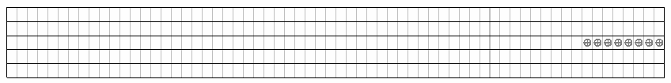
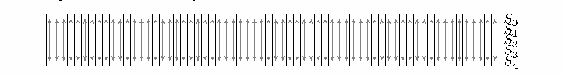
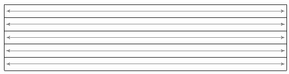
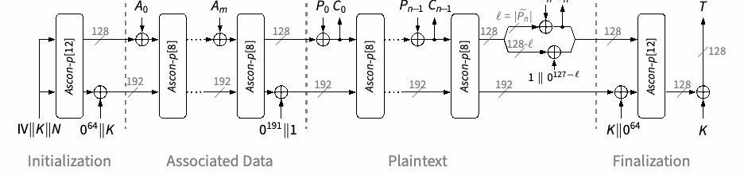
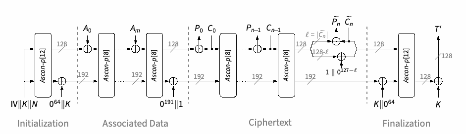
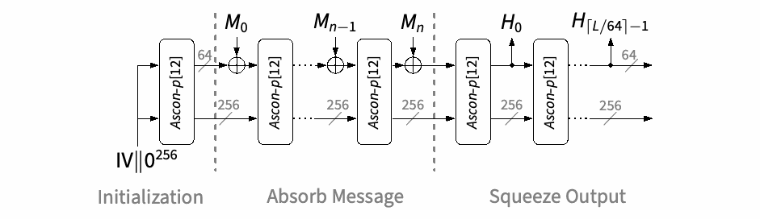
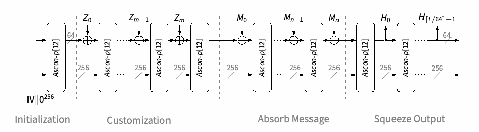
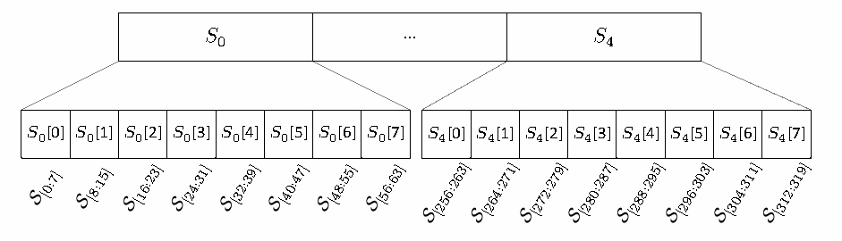
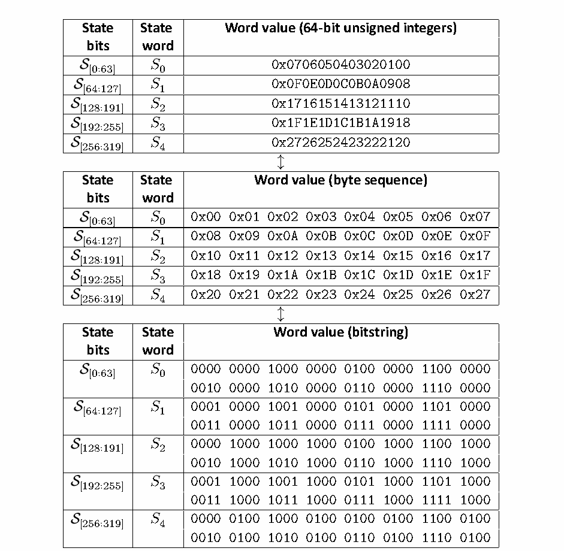

NIST SP 800-232 日本語訳
英語タイトル : Ascon-Based Lightweight Cryptography Standards for Constrained Devices: Authenticated Encryption, Hash, and Extendable Output Functions日本語タイトル : 制約のあるデバイス向けAsconベース軽量暗号標準：認証付き暗号化、ハッシュ関数、拡張出力関数
公開日 : 2025-08-13
原文URL : https://csrc.nist.gov/pubs/sp/800/232/final
翻訳編集 : 自動生成（有志による非公式の日本語訳）, 原文取得日 : 2026-09-26, 訳文 : 788 / 788 ブロック
[要約] SP 800-232 は、リソースが限られたデバイス向けの Ascon ファミリに基づく軽量暗号標準として、Ascon-AEAD128、Ascon-Hash256、Ascon-XOF128、Ascon-CXOF128 の技術仕様とセキュリティ特性を規定します。Ascon 置換の内部状態と各層、認証付き暗号スキーム、ハッシュ関数および拡張可能出力関数（XOF）の仕様を説明します。NIST が2023年に選定した Ascon は、IoT デバイスや組み込みシステムなどの制約のある環境に適し、AES が最適に機能しない場合の代替手段として開発されています。
NIST Special Publication 800
NIST Special Publication 800
NIST SP 800-232
NIST SP 800-232
Ascon-Based Lightweight Cryptography Standards for Constrained Devices
制約のあるデバイス向けAsconベース軽量暗号標準
Authenticated Encryption, Hash, and Extendable Output Functions
認証付き暗号化、ハッシュ関数、および拡張出力関数
Meltem Sönmez Turan Kerry A. McKay Donghoon Chang Jinkeon Kang
Meltem Sönmez Turan Kerry A. McKay Donghoon Chang Jinkeon Kang
John Kelsey
John Kelsey
This publication is available free of charge from: https://doi.org/10.6028/NIST.SP.800-232
本刊行物は以下から無料で入手可能である: https://doi.org/10.6028/NIST.SP.800-232
NIST Special Publication 800
NIST Special Publication 800
NIST SP 800-232
NIST SP 800-232
Ascon-Based Lightweight Cryptography Standards for Constrained Devices
制約のあるデバイス向けAsconベース軽量暗号標準
Authenticated Encryption, Hash, and Extendable Output Functions
認証付き暗号化、ハッシュ関数、および拡張出力関数
Meltem Sönmez Turan Kerry A. McKay Jinkeon Kang*
Meltem Sönmez Turan Kerry A. McKay Jinkeon Kang*
John Kelsey
John Kelsey
Computer Security Division Information Technology Laboratory
コンピュータセキュリティ部門 情報技術研究所
* Former Foreign Guest Researcher; all work for this publication was done while at NIST.
* 元外国人客員研究員。本出版物のためのすべての作業はNIST在籍中に行われた。
Donghoon Chang
Donghoon Chang
Strativia
Strativia
This publication is available free of charge from: https://doi.org/10.6028/NIST.SP.800-232
本刊行物は以下から無料で入手できる: https://doi.org/10.6028/NIST.SP.800-232
August 2025
2025年8月
U.S. Department of Commerce Howard Lutnick, Secretary
米国商務省 ハワード・ラトニック長官
National Institute of Standards and Technology
国立標準技術研究所
Craig Burkhardt, Acting Under Secretary of Commerce for Standards and Technology and Acting NIST Director
クレイグ・バークハート、商務省標準・技術担当次官代行兼NIST所長代行
Certain equipment, instruments, software, or materials, commercial or non-commercial, are identified in this paper in order to specify the experimental procedure adequately. Such identification does not imply recommendation or endorsement of any product or service by NIST, nor does it imply that the materials or equipment identified are necessarily the best available for the purpose.
実験手順を適切に規定するため、商用か非商用かを問わず、特定の機器、計器、ソフトウェア、または材料が本文書において特定されている。このような特定は、NISTによるいかなる製品やサービスの推奨または支持を意味するものではなく、また特定された材料や機器がその目的のために必ずしも利用可能な最善のものであることを意味するものでもない。
There may be references in this publication to other publications currently under development by NIST in accordance with its assigned statutory responsibilities. The information in this publication, including concepts and methodologies, may be used by federal agencies even before the completion of such companion publications. Thus, until each publication is completed, current requirements, guidelines, and procedures, where they exist, remain operative. For planning and transition purposes, federal agencies may wish to closely follow the development of these new publications by NIST.
本刊行物には、割り当てられた法的責任に従ってNISTが現在開発中の他の刊行物への言及が含まれている場合がある。本刊行物の情報（概念や方法論を含む）は、そのような関連刊行物の完成前であっても連邦機関によって使用される場合がある。したがって、各刊行物が完成するまでは、現行の要件、ガイドライン、および手順（存在する場合）が引き続き有効である。計画および移行の目的で、連邦機関はNISTによるこれらの新しい刊行物の策定状況を注視することを希望する場合がある。
Organizations are encouraged to review all draft publications during public comment periods and provide feedback to NIST. Many NIST cybersecurity publications, other than the ones noted above, are available at https://csrc.nist.gov/publications
組織は、パブリックコメント期間中にすべてのドラフト文書を確認し、NISTにフィードバックを提供することが推奨される。上記に記載されたもの以外の多くのNISTサイバーセキュリティ刊行物は、https://csrc.nist.gov/publications から入手可能である。
Authority
権限
This publication has been developed by NIST in accordance with its statutory responsibilities under the Federal Information Security Modernization Act (FISMA) of 2014, 44 U.S.C. § 3551 et seq., Public Law (P.L.) 113-283. NIST is responsible for developing information security standards and guidelines, including minimum requirements for federal information systems, but such standards and guidelines shall not apply to national security systems without the express approval of appropriate federal officials exercising policy authority over such systems. This guideline is consistent with the requirements of the Office of Management and Budget (OMB) Circular A-130.
本刊行物は、2014年連邦情報セキュリティ近代化法（FISMA）（合衆国法典第44編第3551条以下、公法（P.L.）113-283）に基づく法定責任に従ってNISTによって策定された。NISTは連邦情報システムの最低要件を含む情報セキュリティ基準およびガイドラインを策定する責任を負うが、当該システムに対して方針権限を行使する適切な連邦職員の明確な承認がない限り、そのような基準およびガイドラインは国家安全保障システムには適用されない。本ガイドラインは、行政管理予算局（OMB）サーキュラーA-130の要件に準拠している。
Nothing in this publication should be taken to contradict the standards and guidelines made mandatory and binding on federal agencies by the Secretary of Commerce under statutory authority. Nor should these guidelines be interpreted as altering or superseding the existing authorities of the Secretary of Commerce, Director of the ORCID, or any other federal official. This publication may be used by nongovernmental organizations on a voluntary basis and is not subject to copyright in the United States. Attribution would, however, be appreciated by NIST.
本刊行物のいかなる内容も、商務長官が法定権限に基づき連邦機関に対して義務付けかつ拘束力を持たせた基準やガイドラインと矛盾するものと解釈されるべきではない。また、本ガイドラインが商務長官、ORCIDのディレクター、あるいはその他の連邦職員の既存の権限を変更またはそれに取って代わるものと解釈されるべきでもない。本刊行物は民間組織によって任意ベースで使用でき、米国内では著作権の対象とならない。ただし、NISTへの帰属表示（出典の明記）は歓迎される。
NIST Technical Series Policies Copyright, Use, and Licensing Statements NIST Technical Series Publication Identifier Syntax
NISTテクニカルシリーズのポリシー 著作権、使用、ライセンスに関する記述 NISTテクニカルシリーズ刊行物識別子の構文
Publication History Approved by the NIST Editorial Review Board on 2025-07-09
刊行履歴 2025-07-09にNIST編集審査委員会によって承認
How to cite this NIST Technical Series Publication: Meltem Sönmez Turan, Kerry A. McKay, Donghoon Chang, Jinkeon Kang, John Kelsey (2025) Ascon-Based Lightweight Cryptography Standards for Constrained Devices. (National Institute of Standards and Technology, Gaithersburg, MD), NIST Special Publication (SP) NIST SP 800-232. https://doi.org/10.6028/NIST.SP.800-232
本NISTテクニカルシリーズ刊行物の引用方法：Meltem Sönmez Turan, Kerry A. McKay, Donghoon Chang, Jinkeon Kang, John Kelsey (2025) Ascon-Based Lightweight Cryptography Standards for Constrained Devices. (National Institute of Standards and Technology, Gaithersburg, MD), NIST Special Publication (SP) NIST SP 800-232. https://doi.org/10.6028/NIST.SP.800-232
Author ORCID iDs
著者のORCID iD一覧
Meltem Sönmez Turan: 0000-0002-1950-7130
Meltem Sönmez Turan: 0000-0002-1950-7130
Kerry A. McKay: 0000-0002-5956-587X
Kerry A. McKay: 0000-0002-5956-587X
Donghoon Chang: 0000-0003-1249-2869
Donghoon Chang: 0000-0003-1249-2869
Jinkeon Kang: 0000-0003-2142-8236
Jinkeon Kang: 0000-0003-2142-8236
John Kelsey: 0000-0002-3427-1744
John Kelsey: 0000-0002-3427-1744
Contact Information SP800-232-comments@list.nist.gov
連絡先情報 SP800-232-comments@list.nist.gov
Additional Information Additional information about this publication is available at https://csrc.nist.gov/pubs/sp/800/232/final, including related content, potential updates, and document history.
追加情報 本刊行物に関する追加情報（関連コンテンツ、今後の更新の可能性、文書の履歴など）は、https://csrc.nist.gov/pubs/sp/800/232/final から入手できる。
All comments are subject to release under the Freedom of Information Act (FOIA).
すべてのコメントは、情報自由法（FOIA）に基づき公開の対象となる。
Abstract
概要
In 2023, the National Institute of Standards and Technology (NIST) announced the selection of the Ascon family of algorithms designed by Dobraunig, Eichlseder, Mendel, and Schläffer to provide efficient cryptographic solutions for resource-constrained devices. This decision emerged from a rigorous, multi-round lightweight cryptography standardization process. The Ascon family includes a suite of cryptographic primitives that provide Authenticated Encryption with Associated Data (AEAD), hash function, and eXtendable Output Function (XOF) capabilities. The Ascon family is characterized by lightweight, permutation-based primitives and provides robust security, efficiency, and flexibility, making it ideal for resource-constrained environments, such as Internet of Things (IoT) devices, embedded systems, and low-power sensors. The family is developed to offer a viable alternative when the Advanced Encryption Standard (AES) may not perform optimally. This standard outlines the technical specifications and security properties of Ascon-AEAD128, Ascon-Hash256, Ascon-XOF128, and Ascon-CXOF128.
2023年、米国国立標準技術研究所（NIST）は、リソース制約のあるデバイス向けに効率的な暗号ソリューションを提供するため、Dobraunig、Eichlseder、Mendel、Schläfferによって設計されたAsconアルゴリズムファミリの選定を発表した。この決定は、厳格な複数ラウンドにわたる軽量暗号標準化プロセスから生まれたものである。Asconファミリには、関連データ付き認証付き暗号（AEAD）、ハッシュ関数、および拡張可能出力関数（XOF）の機能を提供する暗号プリミティブのスイートが含まれている。Asconファミリは軽量な置換ベースのプリミティブを特徴とし、堅牢なセキュリティ、効率性、柔軟性を提供するため、モノのインターネット（IoT）デバイス、組み込みシステム、低電力センサーなどのリソース制約のある環境に最適である。本ファミリは、高度暗号化規格（AES）が最適に機能しない可能性がある場合に、実行可能な代替手段を提供するよう開発されている。本規格は、Ascon-AEAD128、Ascon-Hash256、Ascon-XOF128、およびAscon-CXOF128の技術仕様とセキュリティ特性の概要を説明する。
Keywords
キーワード
Ascon; authenticated encryption; constrained devices; eXtendable Output Function (XOF); hash function; lightweight cryptography; permutation-based cryptography; standardization.
Ascon、認証付き暗号、制約のあるデバイス、拡張可能出力関数（XOF）、ハッシュ関数、軽量暗号、置換ベースの暗号、標準化。
Reports on Computer Systems Technology
コンピュータシステム技術に関するレポート
The Information Technology Laboratory (ITL) at the National Institute of Standards and Technology (NIST) promotes the U.S. economy and public welfare by providing technical leadership for the Nation’s measurement and standards infrastructure. ITL develops tests, test methods, reference data, proof of concept implementations, and technical analyses to advance the development and productive use of information technology. ITL’s responsibilities include the development of management, administrative, technical, and physical standards and guidelines for the cost-effective security and privacy of other than national security-related information in federal information systems. The Special Publication 800-series reports on ITL’s research, guidelines, and outreach efforts in information system security, and its collaborative activities with industry, government, and academic organizations.
米国国立標準技術研究所（NIST）の情報技術研究所（ITL）は、国の測定および標準インフラストラクチャに対する技術的リーダーシップを提供することにより、米国の経済と公共の福祉を促進している。ITLは、情報技術の開発と生産的な利用を推進するために、テスト、テスト方法、参照データ、概念実証の実装、および技術的分析を開発している。ITLの責任には、連邦情報システムにおける国家安全保障関連情報以外の情報のセキュリティとプライバシーを費用対効果高く確保するための、管理上、行政上、技術上、および物理的な標準とガイドラインの開発が含まれる。Special Publication 800シリーズは、情報システムセキュリティにおけるITLの研究、ガイドライン、およびアウトリーチの取り組み、ならびに業界、政府、および学術組織との協調的な活動について報告している。
Patent Disclosure Notice
特許開示に関する通知
NOTICE: ITL has requested that holders of patent claims whose use may be required for compliance with the guidance or requirements of this publication disclose such patent claims to ITL. However, holders of patents are not obligated to respond to ITL calls for patents and ITL has not undertaken a patent search in order to identify which, if any, patents may apply to this publication.
通知：ITLは、本出版物のガイダンスまたは要件への準拠に使用が必要となる可能性がある特許クレームの保有者に対し、そのような特許クレームをITLに開示するよう要請している。ただし、特許権者はITLによる特許の要請に応じる義務はなく、ITLは本出版物に該当する可能性がある特許（存在する場合）を特定するための特許調査を実施していない。
As of the date of publication and following call(s) for the identification of patent claims whose use may be required for compliance with the guidance or requirements of this publication, no such patent claims have been identified to ITL.
発行日現在、本刊行物のガイダンスまたは要件への準拠に使用が必要となる可能性がある特許クレームの特定に関する要請を経ても、ITLに対してそのような特許クレームは特定されていない。
No representation is made or implied by ITL that licenses are not required to avoid patent infringement in the use of this publication.
本出版物の使用において特許侵害を回避するためにライセンスが不要である旨を、ITLが明示または黙示に表明するものではない。
Table of Contents
目次
1. Introduction — 1
1. 導入 — 1
2. Preliminaries — 3
2. 予備知識 — 3
2.1. Auxiliary Functions — 7
2.1. 補助関数 — 7
3. Ascon Permutations — 8
3. Ascon置換 — 8
3.1. Internal State — 8
3.1. 内部状態 — 8
3.2. Constant-Addition Layer \(p_C\) — 8
3.2. 定数加算層 \(p_C\) — 8
3.3. Substitution Layer \(p_S\) — 9
3.3. 置換層 \(p_S\) — 9
3.4. Linear Diffusion Layer \(p_L\) — 10
3.4. 線形拡散層 \(p_L\) — 10
4. Authenticated Encryption Scheme: Ascon-AEAD128 — 11
4. 認証付き暗号スキーム: Ascon-AEAD128 — 11
4.1. Specification of Ascon-AEAD128 — 11
4.1. Ascon-AEAD128の仕様 — 11
4.1.1. Encryption — 11
4.1.1. 暗号化 — 11
4.1.2. Decryption — 15
4.1.2. 復号 — 15
4.2. Implementation Options — 18
4.2. 実装オプション — 18
4.2.1. Truncation — 18
4.2.1. 切り捨て — 18
4.2.2. Nonce Masking — 18
4.2.2. ノンスマスキング — 18
4.3. AEAD Requirements — 19
4.3. AEAD要件 — 19
4.4. Security Properties — 20
4.4. セキュリティ特性 — 20
4.4.1. Single-Key Setting — 20
4.4.1. シングルキー設定 — 20
4.4.2. Multi-Key Setting — 20
4.4.2. マルチキー設定 — 20
4.4.3. Nonce-Misuse Setting — 21
4.4.3. ノンス誤用設定 — 21
5. Hash and eXtendable-Output Functions (XOFs) — 23
5. ハッシュ関数および拡張可能出力関数（XOF） — 23
5.1. Specification of Ascon-Hash256 — 23
5.1. Ascon-Hash256の仕様 — 23
5.2. Specification of Ascon-XOF128 — 25
5.2. Ascon-XOF128の仕様 — 25
5.3. Specification of Ascon-CXOF128 — 28
5.3. Ascon-CXOF128の仕様 — 28
5.4. Streaming API for XOF — 30
5.4. XOF用ストリーミングAPI — 30
5.5. Security Strengths — 31
5.5. セキュリティ強度 — 31
6. Conformance — 31
6. 適合性 — 31
Appendix A. Implementation Notes.................................................... 35
付録A. 実装に関する注記.................................................... 35
A.1. Conversion Functions ............................................................ 35
A.1. 変換関数 ............................................................ 35
A.2. Implementing with Integers ..................................................... 36
A.2. 整数を用いた実装 ..................................................... 36
A.3. Precomputation .................................................................. 39
A.3. 事前計算 .................................................................. 39
Appendix B. Determination of the Initial Values....................................... 40
付録 B. 初期値の決定....................................... 40
List of Tables
表一覧
Table 1. Acronyms — 3
表 1. 頭字語 — 3
Table 2. Terms and definitions — 3
表 2. 用語および定義 — 3
Table 3. Notations — 5
表 3. 記法 — 5
Table 4. Basic operations and functions — 6
表 4. 基本的な演算および関数 — 6
Table 5. The constants \(\mathtt{const}_i\) to derive round constants of the Ascon permutations — 9
表 5. Ascon置換のラウンド定数を導出するための定数 \(\mathtt{const}_i\) — 9
Table 6. Lookup table representation of SBOX — 10
表 6. SBOXのルックアップテーブル表現 — 10
Table 7. Security strength of \(\mathtt{Ascon\text{-}AEAD128}\) with \(\lambda\)-bit tag in the \(u\)-key setting, where (\(N\), \(A\)) pairs are distinct for encryption per key — 21
表 7. \(\mathtt{Ascon\text{-}AEAD128}\) の、\(\lambda\) ビットタグを用いる \(u\) 鍵設定におけるセキュリティ強度。ここで (\(N\), \(A\)) の対は鍵ごとの暗号化において相異なる — 21
Table 8. Integrity security strength of \(\mathtt{Ascon\text{-}AEAD128}\) with \(u\) keys in the nonce-misuse setting — 22
表 8. \(\mathtt{Ascon\text{-}AEAD128}\) の、\(u\) 個の鍵を用いるノンス誤用設定における完全性セキュリティ強度 — 22
Table 9. Security strengths of Ascon-Hash256, Ascon-XOF128, and Ascon-CXOF128 algorithms — 31
表 9. Ascon-Hash256、Ascon-XOF128、およびAscon-CXOF128アルゴリズムのセキュリティ強度 — 31
Table 10. Address for each byte of Ascon state word \(S_i\) in memory on little-endian and big-endian machines, where the word \(S_i\) begins at memory address \(a\) — 36
表 10. リトルエンディアンおよびビッグエンディアンのマシンにおける、メモリ上のAscon状態ワード \(S_i\) の各バイトのアドレス。ここでワード \(S_i\) はメモリアドレス \(a\) から始まる — 36
Table 11. Examples of padding an unsigned integer \(x\) to a 64-bit block, where \(x\) encodes a sequence of bytes that each have value 0xFF in little-endian byte order — 38
表 11. 符号なし整数 \(x\) を64ビットブロックへパディングする例。ここで \(x\) は、各バイトの値が 0xFF であるバイト列をリトルエンディアンのバイト順で符号化したものである — 38
Table 12. Precomputed initialization phase values for Ascon-Hash256, Ascon-XOF128, and Ascon-CXOF128 provided in hexadecimal integer form — 40
表 12. 16進整数形式で提供される、Ascon-Hash256、Ascon-XOF128、およびAscon-CXOF128用の事前計算された初期化フェーズの値 — 40
Table 13. Parameters for initial value construction — 40
表 13. 初期値構築のためのパラメータ — 40
Table 14. Initial values as hexadecimal integers — 41
表 14. 16進整数としての初期値 — 41
List of Figures
図目次
Figure 1. Application of constant-addition layer \(p_C\) to Ascon state — 9
図 1. Ascon状態への定数加算層 \(p_C\) の適用 — 9
Figure 2. Application of substitution layer \(p_S\) to Ascon state — 9
図 2. Ascon状態への置換層 \(p_S\) の適用 — 9
Figure 3. Circuit representation of the 5-bit S-box SBOX — 10
図 3. 5ビットSボックス SBOX の回路表現 — 10
Figure 4. Application of linear diffusion layer \(p_L\) to Ascon state — 10
図 4. Ascon状態への線形拡散層 \(p_L\) の適用 — 10
Figure 5. Ascon-AEAD128 encryption — 11
図 5. Ascon-AEAD128暗号化 — 11
Figure 6. Ascon-AEAD128 decryption — 15
図 6. Ascon-AEAD128復号 — 15
Figure 7. Structure of Ascon-Hash256 and Ascon-XOF128 — 23
図 7. Ascon-Hash256およびAscon-XOF128の構造 — 23
Figure 8. Structure of Ascon-CXOF128 — 30
図 8. Ascon-CXOF128の構造 — 30
Figure 9. Mapping between state words, bytes, and bits — 35
図 9. 状態ワード、バイト、およびビット間のマッピング — 35
Figure 10. Representation of the Ascon state as 64-bit unsigned integers, byte sequences, and bitstrings — 37
図 10. 64ビット符号なし整数、バイト列、およびビット列としてのAscon状態の表現 — 37
Acknowledgments
謝辞
The authors of the standard express their gratitude to the Ascon designers — Christoph Dobraunig, Maria Eichlseder, Florian Mendel, and Martin Schläffer — for their valuable comments and suggestions during the standardization process.
本規格の著者は、標準化プロセスの過程で貴重なコメントおよび提案を寄せてくれたAsconの設計者たち（Christoph Dobraunig、Maria Eichlseder、Florian Mendel、およびMartin Schläffer）に感謝の意を表する。
The authors also acknowledge and appreciate contributions from their colleagues at NIST during the selection process, including Lawrence Bassham, Çağdaş Çalık, Deukjo Hong, and Noah Waller. The authors also thank Elaine Barker, Luís T. A. N. Brandão, Lily Chen, Andrew Regenscheid, Noah Ross, Sara Kerman, Yu Long Chen, and Yu Sasaki for their technical and administrative support.
著者はまた、選定プロセスにおけるNISTの同僚（Lawrence Bassham、Çağdaş Çalık、Deukjo Hong、およびNoah Wallerを含む）からの貢献を認め、感謝の意を表する。著者はさらに、技術的および事務的支援を提供してくれたElaine Barker、Luís T. A. N. Brandão、Lily Chen、Andrew Regenscheid、Noah Ross、Sara Kerman、Yu Long Chen、およびYu Sasakiに感謝する。
1. Introduction
1. はじめに
This standard specifies the Ascon family of algorithms to provide Authenticated Encryption with Associated Data (AEAD), a hash function, and two eXtendable Output Functions (XOFs). The Ascon family is designed to be efficient in constrained environments. The algorithms included in this standard are as follows:
本規格は、関連データ付き認証付き暗号（AEAD）、ハッシュ関数、および2つの拡張可能出力関数（XOF）を提供するためのAsconファミリーのアルゴリズムを規定する。Asconファミリーは、制約環境において効率的であるように設計されている。本規格に含まれるアルゴリズムは以下のとおりである。
1.Ascon-AEAD128 is a nonce-based AEAD scheme, offering 128-bit security strength in the single-key setting.
1.Ascon-AEAD128はノンスベースのAEAD方式であり、単一鍵設定において128ビットのセキュリティ強度を提供する。
2.Ascon-Hash256 is a cryptographic hash function that produces a 256-bit hash of the input messages, offering a security strength of 128 bits.
2.Ascon-Hash256は暗号学的ハッシュ関数であり、入力メッセージの256ビットハッシュを生成し、128ビットのセキュリティ強度を提供する。
3.Ascon-XOF128 is a XOF, where the output size of the hash of the message can be selected by the user, and the supported security strength is up to 128 bits.
3.Ascon-XOF128はXOFであり、メッセージのハッシュの出力サイズをユーザーが選択でき、サポートされるセキュリティ強度は最大128ビットである。
4.Ascon-CXOF128 is a customized XOF that allows users to specify a customization string and choose the output size of the message hash. It supports a security strength of up to 128 bits.
4.Ascon-CXOF128は、ユーザーがカスタマイズ文字列を指定し、メッセージハッシュの出力サイズを選択できるカスタマイズ済みXOFである。最大128ビットのセキュリティ強度をサポートする。
Development of the Ascon family. Ascon (version v1) [1] was first submitted to CAESAR (Competition for Authenticated Encryption: Security, Applicability, and Robustness)1 in 2014. The submission included two AEAD algorithms: a primary recommendation, Ascon-128, with a 128-bit key and the secondary recommendation, Ascon-96, with a 96-bit key. Updated versions v1.1 [2] for Round 2 and v1.2 [3] for Round 3 included minor tweaks, such as reordering the round constants, and the secondary recommendation was updated to Ascon-128a. In 2019, Ascon-128 and Ascon-128a were selected as the first choice for the lightweight authenticated encryption use case in the final portfolio of the CAESAR competition.
Asconファミリーの開発。Ascon（バージョンv1）[1]は、2014年にCAESAR（Competition for Authenticated Encryption: Security, Applicability, and Robustness）1に初めて提出された。この提出には2つのAEADアルゴリズムが含まれていた。第一推奨である128ビット鍵のAscon-128と、第二推奨である96ビット鍵のAscon-96である。第2ラウンド向けの更新版v1.1 [2]と第3ラウンド向けのv1.2 [3]では、ラウンド定数の並べ替えなどの軽微な調整が加えられ、第二推奨はAscon-128aに更新された。2019年、Ascon-128とAscon-128aは、CAESARコンペティションの最終ポートフォリオにおいて、軽量認証付き暗号のユースケースの第一選択として選定された。
NIST Lightweight Cryptography Standardization Process. In 2015, the National Institute of Standards and Technology (NIST) initiated the Lightweight Cryptography Standardization Process to develop cryptographic standards that are suitable for constrained environments in which conventional cryptographic standards (e.g., AES-GCM [4, 5], SHA-2 [6] and SHA-3 [7] hash function families) may be resource-intensive. In February 2023, NIST announced the decision to standardize the Ascon family [8] for lightweight cryptography applications. For more information, refer to NIST Internal Report (IR) 8268 [9], IR 8369 [10], and IR 8454 [11].
NIST軽量暗号標準化プロセス。2015年、米国国立標準技術研究所（NIST）は、従来の暗号標準（例：AES-GCM [4, 5]、SHA-2 [6]およびSHA-3 [7]ハッシュ関数ファミリー）では資源を多く消費しうる制約のある環境に適した暗号標準を策定するため、軽量暗号標準化プロセスを開始した。2023年2月、NISTは軽量暗号アプリケーション向けにAsconファミリー[8]を標準化する決定を発表した。詳細については、NIST Internal Report (IR) 8268 [9]、IR 8369 [10]、IR 8454 [11]を参照のこと。
Differences from the Ascon submission v1.2. The technical differences between this standard and the Ascon submission [8] are provided below:
Ascon提出版v1.2との相違点。本標準とAscon提出版[8]との技術的な相違点を以下に示す。
•1. Permutations. The Ascon submission defined three Ascon permutations with 6, 8, and 12 rounds. This standard specifies additional Ascon permutations by providing round constants for up to 16 rounds to accommodate potential functionality extensions in the future.
•1. 置換。Ascon提出版では、6、8、12ラウンドの3つのAscon置換が定義されていた。本標準は、将来の機能拡張の可能性に対応するため、最大16ラウンドまでのラウンド定数を提供することにより、追加のAscon置換を規定する。
2.AEAD variants. The Ascon submission package defined AEAD variants ASCON-128, ASCON-128a, and ASCON-80pq. This standard specifies the Ascon-AEAD128 algorithm, which is based on ASCON-128a.
2.AEADのバリアント。Ascon提出パッケージでは、AEADバリアントとしてASCON-128、ASCON-128a、およびASCON-80pqが定義されていた。本標準では、ASCON-128aに基づくAscon-AEAD128アルゴリズムを規定している。
3.Hash function variants. The Ascon submission defined ASCON-HASH and ASCON-HASHA. This standard specifies Ascon-Hash256, which is based on ASCON-HASH.
3.ハッシュ関数のバリアント。Ascon提出版ではASCON-HASHおよびASCON-HASHAが定義されていた。本標準では、ASCON-HASHに基づくAscon-Hash256を規定している。
4.XOF variants. The Ascon submission defined two XOFs, ASCON-XOF and ASCON-XOFA. This standard specifies Ascon-XOF128, which is based on ASCON-XOF, and a new customized XOF, Ascon-CXOF128.
4.XOFのバリアント。Asconの応募では、ASCON-XOFとASCON-XOFAという2つのXOFが定義されていた。本規格では、ASCON-XOFに基づくAscon-XOF128、および新たなカスタマイズドXOFであるAscon-CXOF128を規定している。
5.Initial values. The initial values of the algorithms have been updated to support a new format that accommodates potential functionality extensions.
5.初期値。アルゴリズムの初期値は、将来的な機能拡張に対応可能な新しいフォーマットをサポートするように更新された。
6.Endianness. The endianness has been switched from big endian to little endian to improve performance on little-endian microcontrollers.
6.エンディアン。リトルエンディアンのマイクロコントローラでの性能を向上させるため、エンディアンはビッグエンディアンからリトルエンディアンに切り替えられた。
7.Truncation and nonce masking. The implementation options of Ascon-AEAD128 with truncation and nonce masking have been added.
7.切り捨てとノンスマスキング。切り捨ておよびノンスマスキングを伴うAscon-AEAD128の実装オプションが追加された。
Main features of Ascon. The main features of the Ascon family are:
Asconの主な特徴。Asconファミリーの主な特徴は以下のとおりである。
•Multiple functionalities. The same permutations are used to construct multiple functionalities, which allows an implementation of AEAD, hash, and XOF functionalities to share logic and, therefore, have a more compact implementation than functions that were developed independently.
•複数の機能性。同一の置換（permutation）を用いて複数の機能性が構築されているため、AEAD、ハッシュ、およびXOF機能の実装においてロジックを共有でき、その結果、個別に開発された関数よりもコンパクトな実装が可能となる。
• Online and single pass. Ascon-AEAD128 is online, meaning that the \(i\)-th ciphertext block is determined by the key, nonce, associated data, and first \(i\) plaintext blocks. Ascon family members require only a single pass over the data.
• オンラインおよびシングルパス。 Ascon-AEAD128はオンラインであり、これは \(i\) 番目の暗号文ブロックが鍵、ノンス、関連データ、および最初の \(i\) 個の平文ブロックによって決定されることを意味する。Asconファミリーのメンバーは、データに対して1回のパス（シングルパス）のみを必要とする。
•Inverse-free. Since all of the Ascon family members only use the underlying permutations in the forward direction, implementing the inverse permutations is not needed.
•逆変換不要（Inverse-free）。すべてのAsconファミリーメンバーは基礎となる置換を順方向にのみ使用するため、逆置換を実装する必要はない。
Organization. Section 2 provides preliminaries, including the acronyms, terms, definitions, notation, basic operations, and auxiliary functions. Section 3 specifies the Ascon permuta-tions for up to 16 rounds. Section 4 specifies the Ascon-AEAD128AEAD scheme, provides some implementation options for truncation and nonce masking, lists the requirements for validation, and provides security properties. Section 5 specifies the Ascon-Hash256 hash function, the Ascon-XOF128 XOF, and the Ascon-CXOF128 customized XOF and describes their security properties. Section 6 provides information about conformance. Appendix A provides additional notes and conversion functions for implementations. Appendix B pro-vides additional information regarding the construction of initial values.
構成。第2節では、頭字語、用語、定義、表記法、基本演算、および補助関数を含む予備知識を説明する。第3節では、最大16ラウンドのAscon置換を規定する。第4節では、Ascon-AEAD128 AEAD方式を規定し、切り捨てやノンスマスキングの実装オプションを示し、検証の要件を列挙し、セキュリティ特性を説明する。第5節では、ハッシュ関数Ascon-Hash256、XOFであるAscon-XOF128、およびカスタマイズ済みXOFであるAscon-CXOF128を規定し、それらのセキュリティ特性を説明する。第6節では適合性に関する情報を示す。付録Aでは実装向けの追加の注記と変換関数を、付録Bでは初期値の構築に関する追加情報を示す。
2. Preliminaries
2. 予備知識
Table 1 lists the acronyms used in this standard.
表1に、本規格で使用される頭字語を列挙する。
Table 1. Acronyms
表1. 頭字語
Acronym Definition
頭字語 定義
AD — Associated Data
AD — 関連データ（Associated Data）
AE — Authenticated Encryption
AE — 認証付き暗号（Authenticated Encryption）
AEAD — Authenticated Encryption with Associated Data
AEAD — 関連データ付き認証付き暗号（Authenticated Encryption with Associated Data）
AES — Advanced Encryption Standard
AES — Advanced Encryption Standard
CAESAR — Competition for Authenticated Encryption: Security, Applicability, and Robustness
CAESAR — Competition for Authenticated Encryption: Security, Applicability, and Robustness
CXOF — Customized eXtendable-Output Function
CXOF — カスタマイズ可能な拡張可能出力関数（Customized eXtendable-Output Function）
GCM — Galois/Counter Mode
GCM — Galois/Counter Mode
NIST — National Institute of Standards and Technology
NIST — 米国国立標準技術研究所（National Institute of Standards and Technology）
SHA — Secure Hash Algorithm
SHA — Secure Hash Algorithm
SPN — Substitution–Permutation Network
SPN — 置換・転置ネットワーク（Substitution–Permutation Network）
SP — Special Publication
SP — Special Publication
XOF — eXtendable-Output Function
XOF — 拡張可能出力関数（eXtendable-Output Function）
XOR — eXclusive OR
XOR — 排他的論理和（eXclusive OR）
Table 2 defines the terms used in this standard.
表2では、本規格で使用される用語を定義する。
Table 2. Terms and definitions
表2. 用語および定義
Term — Definition
用語 — 定義
approved — An algorithm or technique that is either specified or adopted in a FIPS publication or NIST Special Publication (SP) in the Computer Security SP 800 series (i.e., FIPS-approved or NIST-recommended).
approved — FIPS 出版物、またはコンピュータセキュリティ SP 800 シリーズの NIST Special Publication（SP）において規定または採用されているアルゴリズムまたは技法（すなわち、FIPS 承認済みまたは NIST 推奨）。
associated data — Input data that is authenticated but not encrypted.
associated data — 認証されるが暗号化されない入力データ。
bit — A binary digit, 0 or 1. In this standard, bits are indicated in the Courier New font.
bit — 2進数字、すなわち0または1。本標準では、ビットは Courier New フォントで示す。
bitstring — A finite, ordered sequence of bits.
bitstring — 有限で順序付けられたビットの列。
Table 2. Terms and definitions
表 2. 用語および定義
capacity — The width of the underlying permutation minus the rate.
capacity — 基礎となる置換の幅からレートを引いたもの。
digest — Output of a hash function or XOF.
digest — ハッシュ関数またはXOFの出力。
eXtendable-Output Function (XOF) — A function on bit strings in which the output can be extended to any desired length.
eXtendable-Output Function (XOF) — 出力を任意の所望の長さに拡張できる、ビット列上の関数。
forgery — A (ciphertext, tag) pair produced by an adversary who is not knowledgeable of the secret key and yet is accepted as valid by the verified decryption procedure.
forgery — 秘密鍵を知らない攻撃者が生成したにもかかわらず、検証付き復号手順によって有効として受理される（暗号文, タグ）の組。
hash function — A mathematical function that maps a string of arbitrary length to a fixed-length string.
hash function — 任意長の文字列を固定長の文字列に写像する数学的関数。
message — Input to the hash function.
message — ハッシュ関数への入力。
nonce — An input value to the authenticated encryption algorithm that is used only once for encryption performed under a given key.
nonce — 認証付き暗号アルゴリズムへの入力値であり、所与の鍵の下で行われる暗号化に一度だけ使用されるもの。
nonce-misuse — A setting in which a nonce is used more than once for the encryption algorithm under a given key.
nonce-misuse — 所与の鍵の下で、暗号化アルゴリズムにナンスが複数回使用される設定。
nonce-respecting — A setting in which a nonce is never repeated for the encryption algorithm under a given key.
nonce-respecting — 所与の鍵の下で、暗号化アルゴリズムにナンスが決して繰り返し使用されない設定。
rate — The number of input bits processed or output bits generated per invocation of the underlying permutation.
rate — 基礎となる置換の1回の呼び出しあたりに処理される入力ビット数、または生成される出力ビット数。
secret key — A cryptographic key that is used by a secret-key (i.e., symmetric) cryptographic algorithm and not made public.
secret key — 秘密鍵（すなわち対称）暗号アルゴリズムで使用され、公開されない暗号鍵。
shall — Term used to express a requirement that needs to be fulfilled to claim conformance to this standard.
shall — 本標準への適合を主張するために満たす必要がある要件を表すのに用いる用語。
should — Term used to indicate a strong recommendation but not a requirement of this standard. Ignoring the recommendation could result in undesirable results.
should — 強い推奨ではあるが本標準の要件ではないことを示すのに用いる用語。この推奨を無視すると、望ましくない結果を招くおそれがある。
tag — A cryptographic checksum on data that is designed to reveal both accidental errors and the intentional modification of the data whose computation and verification require knowledge of a secret key.
tag — データの偶発的な誤りと意図的な改変の両方を明らかにするように設計された、データに対する暗号学的チェックサムであり、その計算と検証には秘密鍵の知識が必要である。
truncation — A process that shortens an input bitstring, preserving only a sub-string of a specified length.
truncation — 入力ビット列を短縮し、指定された長さの部分列のみを保持する処理。
Table 3 lists the notations used in this standard.
表3に、本規格で使用される表記法を列挙する。
Table 3. Notations
表3. 表記法
Notation Definition
表記 定義
128-bit secret key
128ビット秘密鍵
\(K\)
\(K\)
128-bit nonce
128ビットノンス
\(N\)
\(N\)
Associated data
関連データ
\(A\)
\(A\)
\(i\)th block of associated data \(A\)
\(i\)番目の関連データ \(A\) のブロック
\(A_i\)
\(A_i\)
Plaintext
平文
\(P\)
\(P\)
\(i\)th block of plaintext \(P\)
\(i\)番目の平文 \(P\) のブロック
\(P_i\)
\(P_i\)
Ciphertext
暗号文
\(C\)
\(C\)
\(i\)th block of ciphertext \(C\)
\(i\)番目の暗号文 \(C\) のブロック
\(C_i\)
\(C_i\)
Customization string
カスタマイズ文字列
\(Z\)
\(Z\)
\(i\)th block of customization string \(Z\)
\(i\)番目のカスタマイズ文字列 \(Z\) のブロック
\(Z_i\)
\(Z_i\)
128-bit authentication tag
128ビットの認証タグ
\(T\)
\(T\)
64-bit constant initial value
64ビットの定数初期値
\(\mathit{IV}\)
\(\mathit{IV}\)
\(\mathtt{fail}\) Error message to indicate that the verification of authenticated ciphertext failed
\(\mathtt{fail}\) 認証付き暗号文の検証に失敗したことを示すエラーメッセージ
Message
メッセージ
\(M\)
\(M\)
\(i\)th block of message \(M\)
\(i\)番目のメッセージ \(M\) のブロック
\(M_i\)
\(M_i\)
Hash value \(H\)
ハッシュ値 \(H\)
\(H\)
\(H\)
\(i\)th block of hash value \(H\)
\(i\)番目のハッシュ値 \(H\) のブロック
\(H_i\)
\(H_i\)
320-bit internal state of the underlying permutation
基礎となる置換の320ビットの内部状態
\(\mathcal{S}\)
\(\mathcal{S}\)
\(S_0, \ldots, S_4\) The five 64-bit words of the internal state \(\mathcal{S}\), where \(\mathcal{S} = S_0 \parallel S_1 \parallel \ldots \parallel S_4\)
\(S_0, \ldots, S_4\) 内部状態 \(\mathcal{S}\) の5つの64ビットワード。ここで \(\mathcal{S} = S_0 \parallel S_1 \parallel \ldots \parallel S_4\)
\(j\)th bit of \(S_i\), \(0 \le i \le 4\), \(0 \le j \le 63\)
\(j\)番目の \(S_i\) のビット、\(0 \le i \le 4\)、\(0 \le j \le 63\)
\(s_{(i,j)}\)
\(s_{(i,j)}\)
\(S_i[j]\) \(j^{th}\) byte of state word \(S_i\) for \(0 \le i \le 4\), \(0 \le j \le 7\)
\(S_i[j]\) \(j^{th}\) バイト（状態ワード \(S_i\) の、\(0 \le i \le 4\)、\(0 \le j \le 7\) に対するもの）
The subset of state \(\mathcal{S}\) beginning at index \(i\) and ending at index \(j\), inclusive.
状態 \(\mathcal{S}\) の部分集合で、インデックス \(i\) から始まりインデックス \(j\) で終わるもの（両端を含む）。
\(S_{[i:j]}\)
\(S_{[i:j]}\)
When \(i > j\), \(S_{[i:j]}\) is the empty string. When \(i = j\), \(S_{[i:j]}\) is a single bit.
\(i > j\) の場合、\(S_{[i:j]}\) は空文字列である。\(i = j\) の場合、\(S_{[i:j]}\) は単一のビットである。
\(\lambda\) Length of the truncated tag in bits
\(\lambda\) 切り詰めたタグの長さ（ビット単位）
\(c_i\) The constant value for round \(i\) of the Ascon permutation
\(c_i\) Ascon置換のラウンド \(i\) に対する定数値
\(p_C, p_S, p_L\) Constant-addition, substitution, and linear layers of the round function \(p\)
\(p_C, p_S, p_L\) ラウンド関数 \(p\) の定数加算層、置換層、および線形層
Table 4 lists the basic operations and functions used in this standard.
表4は、本規格で使用される基本演算および関数を一覧表示している。
Table 4. Basic operations and functions
表4. 基本演算および関数
Functions
関数
Definition
定義
\(\{\mathtt{0},\mathtt{1}\}^*\)
\(\{\mathtt{0},\mathtt{1}\}^*\)
The set of all finite bit strings, including the empty string
空文字列を含む、すべての有限ビット文字列の集合
\(\{\mathtt{0},\mathtt{1}\}^s\)
\(\{\mathtt{0},\mathtt{1}\}^s\)
The set of all bit strings of length \(s\)
長さ \(s\) のすべてのビット文字列の集合
\(\mathtt{0}^s\)
\(\mathtt{0}^s\)
When \(s \ge 0\), \(\mathtt{0}^s\) is the bit string that consists of \(s\) consecutive \(\mathtt{0}\)s. When \(s = 0\), then \(\mathtt{0}^s\) is the empty string.
\(s \ge 0\) の場合、\(\mathtt{0}^s\) は \(s\) 個の連続する \(\mathtt{0}\) から構成されるビット文字列である。\(s = 0\) の場合、\(\mathtt{0}^s\) は空文字列である。
\(|X|\) Length of the bitstring \(X\) in bits
\(|X|\) ビット文字列 \(X\) のビット単位の長さ
Concatenation of bitstrings \(X\) and \(Y\)
ビット文字列 \(X\) と \(Y\) の連結
\(X \parallel Y\)
\(X \parallel Y\)
Multiplication of integers \(x\) and \(y\)
整数 \(x\) と \(y\) の乗算
\(x \times y\)
\(x \times y\)
Addition of integers \(x\) and \(y\)
整数 \(x\) と \(y\) の加算
\(x + y\)
\(x + y\)
Subtraction of integers \(x\) and \(y\)
整数 \(x\) と \(y\) の減算
\(x - y\)
\(x - y\)
Division of integer \(x\) and non-zero integer \(y\)
整数 \(x\) と非ゼロの整数 \(y\) の除算
\(x/y\)
\(x/y\)
Remainder in the integer division of \(x\) by \(y\)
\(x\) の \(y\) による整数除算における剰余
\(x \bmod y\)
\(x \bmod y\)
For a real number \(x\), the smallest integer greater than or equal to \(x\)
実数 \(x\) に対し、\(x\) 以上の最小の整数
\(\lceil x \rceil\)
\(\lceil x \rceil\)
For a real number \(x\), the largest integer less than or equal to \(x\)
実数 \(x\) に対し、\(x\) 以下の最大の整数
\(\lfloor x \rfloor\)
\(\lfloor x \rfloor\)
Composition of functions \(f\) and \(g\) (e.g., for functions \(f(x)\) and \(g(x)\), \(f \circ g\) is evaluated as \(f(g(x))\))
関数 \(f\) および \(g\) の合成（例：関数 \(f(x)\) および \(g(x)\) に対し、\(f \circ g\) は \(f(g(x))\) として評価される）
\(f \circ g\)
\(f \circ g\)
\(g(x)\), \(f \circ g\) is evaluated as \(f(g(x))\)) \(\odot\) Bitwise AND operation
\(g(x)\)に対し、\(f \circ g\)は\(f(g(x))\)として評価される） \(\odot\) ビットごとのAND演算
\(\odot\)
\(\odot\)
Bitwise XOR operation
ビットごとのXOR演算
\(\oplus\)
\(\oplus\)
Right rotation (circular shift) by \(i\) bits of the 64-bit word \(X\), where the least significant bit is the rightmost bit
\(i\) ビット分の、64ビットワード \(X\) の右回転（循環シフト）。ここで、最下位ビットは右端のビットである
\(X \ggg i\)
\(X \ggg i\)
Left shift by \(i\) bits
\(i\) ビットの左シフト
\(X \ll i\)
\(X \ll i\)
The subset of bitstring \(X\) beginning at index \(i\) and ending at index \(j\), inclusive. When \(i > j\), \(X_{[i:j]}\) is the empty string. When \(i = j\), \(X_{[i:j]}\) is a single bit.
ビット文字列 \(X\) のうち、インデックス \(i\) から始まりインデックス \(j\) で終わる部分集合（両端を含む）。\(i > j\) の場合、\(X_{[i:j]}\) は空文字列である。\(i = j\) の場合、\(X_{[i:j]}\) は単一ビットである。
\(X_{[i:j]}\)
\(X_{[i:j]}\)
Boolean operator to perform an equality comparison, (i.e., \(\mathtt{true}\) if \(x\) is equal to \(y\); otherwise, \(\mathtt{false}\))
等価比較を実行するブール演算子（すなわち、\(\mathtt{true}\) となるのは \(x\) が \(y\) に等しい場合であり、それ以外は \(\mathtt{false}\)）
\(x == y\)
\(x == y\)
\(\mathtt{0x}\) Hexadecimal notation
\(\mathtt{0x}\) 16進表記
\(\operatorname{int64}(x)\)
\(\operatorname{int64}(x)\)
64-bit representation of integer \(x\)
整数 \(x\) の64ビット表現
2.1. Auxiliary Functions
2.1. 補助関数
Parse function. The \(\operatorname{parse}(X,r)\) function parses the input bitstring \(X\) into a sequence of blocks \(X_0, X_1, \ldots, \widetilde{X}_\ell\), where \(\ell \leftarrow \lfloor |X|/r \rfloor\) (i.e., \(X \leftarrow X_0 \parallel X_1 \parallel \ldots \parallel \widetilde{X}_\ell\)). The \(X_i\) blocks for \(0 \le i \le \ell-1\) each have a bit length \(r\), whereas \(0 \le \widetilde{X}_\ell \le r-1\) (see Algorithm 1). When \(|X| \bmod r = 0\), the final block is empty (i.e., \(|\widetilde{X}_\ell| = 0\)).
パース関数。\(\operatorname{parse}(X,r)\) 関数は、入力ビット列 \(X\) を一連のブロック \(X_0, X_1, \ldots, \widetilde{X}_\ell\) にパースする。ここで \(\ell \leftarrow \lfloor |X|/r \rfloor\) である（すなわち、\(X \leftarrow X_0 \parallel X_1 \parallel \ldots \parallel \widetilde{X}_\ell\)）。\(X_i\) ブロックは \(0 \le i \le \ell-1\) についてそれぞれビット長 \(r\) を持ち、一方で \(0 \le \widetilde{X}_\ell \le r-1\) である（アルゴリズム 1 を参照）。\(|X| \bmod r = 0\) の場合、最後のブロックは空である（すなわち、\(|\widetilde{X}_\ell| = 0\)）。
Algorithm 1 \(\operatorname{parse}(X,r)\)
Input: bitstring \(X\), a positive integer \(r\)
Output: bitstrings \(X_0, \ldots, X_{\ell-1}, \widetilde{X_\ell}\)
アルゴリズム 1 \(\operatorname{parse}(X,r)\)
入力: ビット列 \(X\)、正の整数 \(r\)
出力: ビット列 \(X_0, \ldots, X_{\ell-1}, \widetilde{X_\ell}\)
\(\ell \leftarrow \lfloor |X|/r \rfloor\)
for \(i = 0\) to \(\ell-1\) do
\(\ell \leftarrow \lfloor |X|/r \rfloor\)
for \(i = 0\) to \(\ell-1\) do
\(X_i \leftarrow X_{[i \times r : (i+1) \times r - 1]}\)
\(X_i \leftarrow X_{[i \times r : (i+1) \times r - 1]}\)
end for
end for
\(\widetilde{X_\ell} \leftarrow X_{[\ell \times r : |X| - 1]}\)
\(\widetilde{X_\ell} \leftarrow X_{[\ell \times r : |X| - 1]}\)
return \(X_0, \ldots, X_{\ell-1}, \widetilde{X_\ell}\)
return \(X_0, \ldots, X_{\ell-1}, \widetilde{X_\ell}\)
Padding rule. The function \(\operatorname{pad}(X,r)\) appends the bit \(\mathtt{1}\) to the bitstring \(X\), followed by the bitstring \(\mathtt{0}^j\), where \(j\) is equal to \((-|X|-1) \bmod r\). The length of the output bitstring is a multiple of \(r\) (see Algorithm 2). For examples of padding when representing the data as 64-bit unsigned integers, see Appendix A.2.
パディング規則。関数 \(\operatorname{pad}(X,r)\) は、ビット \(\mathtt{1}\) をビット列 \(X\) に付加し、それに続いてビット列 \(\mathtt{0}^j\) を付加する。ここで \(j\) は \((-|X|-1) \bmod r\) に等しい。出力ビット列の長さは \(r\) の倍数となる（アルゴリズム 2 を参照）。データを64ビット符号なし整数として表現する場合のパディングの例については、付録 A.2 を参照のこと。
Algorithm 2 \(\operatorname{pad}(X,r)\)
Input: bitstring \(X\), a positive integer \(r\)
Output: padded bitstring \(X'\)
アルゴリズム 2 \(\operatorname{pad}(X,r)\)
入力: ビット列 \(X\)、正の整数 \(r\)
出力: パディングされたビット列 \(X'\)
\(j \leftarrow (-|X|-1) \bmod r\)
\(X' \leftarrow X \parallel \mathtt{1} \parallel \mathtt{0}^j\)
return \(X'\)
\(j \leftarrow (-|X|-1) \bmod r\)
\(X' \leftarrow X \parallel \mathtt{1} \parallel \mathtt{0}^j\)
return \(X'\)
3. Ascon Permutations
3. Ascon置換
This section specifies the \(\mathit{rnd}\)-round \(\mathit{Ascon}\text{-}p[\mathit{rnd}]\) permutations, where \(\mathit{rnd}\) indicates the number of rounds to be performed and \(1 \le \mathit{rnd} \le 16\). The permutations follow the Substitution-Permutation-Network (SPN) structure and consist of iterations of the round function \(p\) that is defined as the composition of three steps
本節では、\(\mathit{rnd}\) ラウンドの \(\mathit{Ascon}\text{-}p[\mathit{rnd}]\) 置換を規定する。ここで、\(\mathit{rnd}\) は実行されるラウンド数を示し、\(1 \le \mathit{rnd} \le 16\) である。これらの置換はSPN（Substitution-Permutation-Network）構造に従い、ラウンド関数 \(p\) の反復から構成される。このラウンド関数は次の3つのステップの合成として定義される
where \(p_C\) is the constant-addition layer (see Sec. 3.2), \(p_S\) is the substitution layer (see Sec. 3.3), and \(p_L\) is the linear diffusion layer (see Sec. 3.4). This composition can also be written as a series of function invocations on an input \(x\) as \(p_L(p_S(p_C(x)))\).
ここで、\(p_C\) は定数加算層（3.2節を参照）、\(p_S\) は換字層（3.3節を参照）、\(p_L\) は線形拡散層（3.4節を参照）である。この合成は、入力 \(x\) に対する一連の関数呼び出しとして \(p_L(p_S(p_C(x)))\) と書くこともできる。
Note that \(\mathit{Ascon}\text{-}p[8]\) and \(\mathit{Ascon}\text{-}p[12]\) are the main building blocks of the Ascon family, and the permutation instantiated with other numbers of rounds may later be used to standardize other functionalities.
なお、\(\mathit{Ascon}\text{-}p[8]\) および \(\mathit{Ascon}\text{-}p[12]\) はAsconファミリーの主要な構成要素であり、他のラウンド数でインスタンス化された置換は、将来他の機能を標準化するために使用される可能性がある。
3.1. Internal State
3.1. 内部状態
The permutations operate on the 320-bit state \(\mathcal{S}\), which is represented as five 64-bit words denoted as \(S_i\) for \(0 \le i \le 4\):
置換は320ビットの状態 \(\mathcal{S}\) に対して動作する。この状態は5つの64ビットワードとして表現され、各ワードを \(S_i\) と表す（\(0 \le i \le 4\)）:
(2)
(2)
Let \(s_{(i,j)}\) represent the \(j\)th bit of \(S_i\), \(0 \le j < 64\). In this specification of the Ascon permutation, each state word represents a 64-bit unsigned integer, where the least significant bit is the rightmost bit. Details on other representations of the state can be found in Appendix A.
\(s_{(i,j)}\) は \(j\) 番目のビットを表すものとし、これは \(S_i\) のビットである（\(0 \le j < 64\)）。Ascon置換の本仕様では、各状態ワードは64ビット符号なし整数を表し、最下位ビットが最も右のビットである。状態の他の表現の詳細は付録Aにある。
3.2. Constant-Addition Layer \(p_C\)
3.2. 定数加算層 \(p_C\)
The constant \(c_i\) of round \(i\) of the Ascon permutation \(\mathit{Ascon\text{-}p}[\mathit{rnd}]\) (instantiated with \(\mathit{rnd}\) rounds) for \(\mathit{rnd} \le 16\) and \(0 \le i \le \mathit{rnd}-1\) is defined as
定数 \(c_i\) は、ラウンド \(i\) で用いる定数であり、Ascon置換 \(\mathit{Ascon\text{-}p}[\mathit{rnd}]\)（\(\mathit{rnd}\) ラウンドでインスタンス化したもの）について、\(\mathit{rnd} \le 16\) かつ \(0 \le i \le \mathit{rnd}-1\) に対して次のように定義される。
where \(\mathtt{const}_0, \ldots, \mathtt{const}_{15}\) are defined in Table 5. The constant-addition layer \(p_C\) adds a 64-bit round constant \(c_i\) to \(S_2\) in round \(i\), for \(i \ge 0\),
ここで、\(\mathtt{const}_0, \ldots, \mathtt{const}_{15}\) は表5で定義される。定数加算層 \(p_C\) は、64ビットのラウンド定数 \(c_i\) を \(S_2\) に加算する。これはラウンド \(i\) で行われ、\(i \ge 0\) に対して次のとおりである。
Table 5. The constants \(\mathtt{const}_i\) to derive round constants of the Ascon permutations
表5. Ascon置換のラウンド定数を導出するための定数 \(\mathtt{const}_i\)
| \(i\) | \(\mathtt{const}_i\) | \(i\) | \(\mathtt{const}_i\) |
|---|---|---|---|
| 0 | 0x000000000000003c | 8 | 0x00000000000000b4 |
| 1 | 0x000000000000002d | 9 | 0x00000000000000a5 |
| 2 | 0x000000000000001e | 10 | 0x0000000000000096 |
| 3 | 0x000000000000000f | 11 | 0x0000000000000087 |
| 4 | 0x00000000000000f0 | 12 | 0x0000000000000078 |
| 5 | 0x00000000000000e1 | 13 | 0x0000000000000069 |
| 6 | 0x00000000000000d2 | 14 | 0x000000000000005a |
| 7 | 0x00000000000000c3 | 15 | 0x000000000000004b |
| \(i\) | \(\mathtt{const}_i\) | \(i\) | \(\mathtt{const}_i\) |
|---|---|---|---|
| 0 | 0x000000000000003c | 8 | 0x00000000000000b4 |
| 1 | 0x000000000000002d | 9 | 0x00000000000000a5 |
| 2 | 0x000000000000001e | 10 | 0x0000000000000096 |
| 3 | 0x000000000000000f | 11 | 0x0000000000000087 |
| 4 | 0x00000000000000f0 | 12 | 0x0000000000000078 |
| 5 | 0x00000000000000e1 | 13 | 0x0000000000000069 |
| 6 | 0x00000000000000d2 | 14 | 0x000000000000005a |
| 7 | 0x00000000000000c3 | 15 | 0x000000000000004b |
Since the first 56 bits of the constants are zero, in practice, this is equivalent to applying the constant to only the least significant eight bits of \(S_2\), as shown in Figure 1.
定数の最初の56ビットはゼロであるため、実際には、これは \(S_2\) の最下位8ビットのみに定数を適用することと等価である（図1参照）。
𝑆

図1. 定数加算層p_CのAsconの状態への適用
0 𝑆 1 𝑆 2 𝑆 3 𝑆 4
0 𝑆 1 𝑆 2 𝑆 3 𝑆 4
Figure 1. Application of constant-addition layer \(p_C\) to Ascon state
図1. 定数加算層 \(p_C\) のAscon状態への適用
3.3. Substitution Layer \(p_S\)
3.3. 換字層 \(p_S\)
The substitution layer \(p_S\) updates the state \(\mathcal{S}\) with 64 parallel applications of the 5-bit substitution box \(\mathrm{SBox}\) as
換字層 \(p_S\) は、状態 \(\mathcal{S}\) を、5ビットの換字ボックス \(\mathrm{SBox}\) の64個の並列適用によって次のように更新する。
for \(0 \le j < 64\), as shown in Figure 2.
ここで \(0 \le j < 64\) であり、図2に示すとおりである。
𝑆 0 𝑆 1 𝑆 2 𝑆 3 𝑆 4
𝑆 0 𝑆 1 𝑆 2 𝑆 3 𝑆 4

置換層p_Sが状態の64個の5ビット列にSBOXを並列適用する様子。
Figure 2. Application of substitution layer \(p_S\) to Ascon state
図2. Ascon状態への換字層 \(p_S\) の適用
The 5-bit \(\mathrm{SBox}\) is computed as
5ビットの \(\mathrm{SBox}\) は次のように計算される。
SBOX may also be implemented as a lookup table, as shown in Table 6. The circuit representation of the SBOX is given in Figure 3.
SBOXは、表6に示すようにルックアップテーブルとしても実装できる。SBOXの回路表現は図3に示されている。
Table 6. Lookup table representation of \(\mathrm{SBox}\)
表6. \(\mathrm{SBox}\) のルックアップテーブル表現
| \(x\) | 0 | 1 | 2 | 3 | 4 | 5 | 6 | 7 | 8 | 9 | a | b | c | d | e | f |
| \(\mathrm{SBox}(x)\) | 4 | b | 1f | 14 | 1a | 15 | 9 | 2 | 1b | 5 | 8 | 12 | 1d | 3 | 6 | 1c |
| \(x\) | 10 | 11 | 12 | 13 | 14 | 15 | 16 | 17 | 18 | 19 | 1a | 1b | 1c | 1d | 1e | 1f |
| \(\mathrm{SBox}(x)\) | 1e | 13 | 7 | e | 0 | d | 11 | 18 | 10 | c | 1 | 19 | 16 | a | f | 17 |
| \(x\) | 0 | 1 | 2 | 3 | 4 | 5 | 6 | 7 | 8 | 9 | a | b | c | d | e | f |
| \(\mathrm{SBox}(x)\) | 4 | b | 1f | 14 | 1a | 15 | 9 | 2 | 1b | 5 | 8 | 12 | 1d | 3 | 6 | 1c |
| \(x\) | 10 | 11 | 12 | 13 | 14 | 15 | 16 | 17 | 18 | 19 | 1a | 1b | 1c | 1d | 1e | 1f |
| \(\mathrm{SBox}(x)\) | 1e | 13 | 7 | e | 0 | d | 11 | 18 | 10 | c | 1 | 19 | 16 | a | f | 17 |
Note that 5-bit inputs are represented in hexadecimal (e.g., \(x = 1\) corresponds to \((0,0,0,0,1)\)).
5ビットの入力は16進数で表されることに注意されたい（例：\(x = 1\) は \((0,0,0,0,1)\) に対応する）。
5ビットSボックスSBOXを構成する論理回路。
Figure 3. Circuit representation of the 5-bit S-box SBOX
図 3. 5ビットSボックス SBOX の回路表現
3.4. Linear Diffusion Layer \(p_L\)
3.4. 線形拡散層 \(p_L\)
The linear diffusion layer \(p_L\) provides diffusion within each 64-bit word \(S_i\), as shown in Figure 4.
線形拡散層 \(p_L\) は、図4に示すように、各64ビットワード \(S_i\) 内での拡散を提供する。

線形拡散層p_Lが状態ワードS_0からS_4にそれぞれ線形関数Σ_iを適用する様子。
Figure 4. Application of linear diffusion layer \(p_L\) to Ascon state
図4. Ascon状態への線形拡散層 \(p_L\) の適用
This layer applies the linear functions \(\Sigma_i\) to their corresponding state words as \(S_i \leftarrow \Sigma_i(S_i)\) for \(0 \le i \le 4\), where each \(\Sigma_i\) is defined as:
この層は、線形関数 \(\Sigma_i\) を対応する状態ワードに \(S_i \leftarrow \Sigma_i(S_i)\) として適用する。ここで \(0 \le i \le 4\) であり、各 \(\Sigma_i\) は次のように定義される：
4. Authenticated Encryption Scheme: Ascon-AEAD128
4. 認証付き暗号スキーム: Ascon-AEAD128
This section specifies the AEAD scheme Ascon-AEAD128, details implementation options (e.g., truncation and nonce-masking), lists AEAD requirements, and provides security properties.
本節では、AEAD方式Ascon-AEAD128を規定し、実装上の選択肢（例：切り詰めやナンスマスキング）の詳細を述べ、AEADの要件を列挙し、セキュリティ特性を示す。
4.1. Specification of Ascon-AEAD128
4.1. Ascon-AEAD128の仕様
\(\texttt{Ascon-AEAD128}\) consists of the encryption algorithm \(\texttt{Ascon-AEAD128.enc}\) (specified in Sec. 4.1.1) and the decryption algorithm \(\texttt{Ascon-AEAD128.dec}\) (specified in Sec. 4.1.2).
\(\texttt{Ascon-AEAD128}\) は、暗号化アルゴリズム \(\texttt{Ascon-AEAD128.enc}\)（4.1.1項で規定）および復号アルゴリズム \(\texttt{Ascon-AEAD128.dec}\)（4.1.2項で規定）で構成される。
\(\texttt{Ascon-AEAD128.enc}\) takes a 128-bit secret key \(K\), a 128-bit nonce \(N\), variable-length associated data \(A\), and variable-length plaintext \(P\) as inputs and outputs ciphertext \(C\) (where \(|C| = |P|\)) and 128-authentication tag \(T\) (see Sec. 4.2.1 for the truncation option):
\(\texttt{Ascon-AEAD128.enc}\) は、128ビットの秘密鍵 \(K\)、128ビットのノンス \(N\)、可変長の関連データ \(A\)、および可変長の平文 \(P\) を入力として受け取り、暗号文 \(C\)（ここで \(|C| = |P|\)）および128ビットの認証タグ \(T\) を出力する（切り捨てオプションについては4.2.1項を参照）：
\(\texttt{Ascon-AEAD128.dec}\) takes key \(K\), nonce \(N\), associated data \(A\), ciphertext \(C\), and authentication tag \(T\) as inputs and outputs \(P\) if the tag is valid:
\(\texttt{Ascon-AEAD128.dec}\) は、鍵 \(K\)、ノンス \(N\)、関連データ \(A\)、暗号文 \(C\)、および認証タグ \(T\) を入力として受け取り、タグが有効である場合に \(P\) を出力する：
4.1.1. Encryption
4.1.1. 暗号化
This section outlines the encryption algorithm of Ascon-AEAD128, which comprises four phases: initialization, associated data processing, plaintext processing, and finalization (see Figure 5).
本節では、Ascon-AEAD128の暗号化アルゴリズムの概要を説明する。これは、初期化、関連データ処理、平文処理、および最終処理の4つのフェーズで構成される（図5を参照）。
Note that the rate and capacity of Ascon-AEAD128 are 128 and 192 bits, respectively.
Ascon-AEAD128のレートとキャパシティは、それぞれ128ビットと192ビットであることに注意されたい。

Ascon-AEAD128の暗号化フロー。初期化、関連データの処理、平文の処理、最終処理の各段階を順に示す。
The pseudocode of Ascon-AEAD128.enc is provided in Algorithm 3.
Ascon-AEAD128.enc の擬似コードをアルゴリズム3に示す。
Algorithm 3 \(\texttt{Ascon-AEAD128.enc}(K, N, A, P)\)
Input: 128-bit key \(K\), 128-bit nonce \(N\), associated data \(A\), plaintext \(P\)
Output: ciphertext \(C\), 128-bit tag \(T\)
アルゴリズム3 \(\texttt{Ascon-AEAD128.enc}(K, N, A, P)\)
入力: 128ビットの鍵 \(K\)、128ビットのノンス \(N\)、関連データ \(A\)、平文 \(P\)
出力: 暗号文 \(C\)、128ビットのタグ \(T\)
\(\mathit{IV} \leftarrow\) 0x00001000808c0001 ▷ Initialization
\(\mathit{IV} \leftarrow\) 0x00001000808c0001 ▷ 初期化
\(\mathcal{S} \leftarrow \mathit{IV} \parallel K \parallel N\)
\(\mathcal{S} \leftarrow \mathit{IV} \parallel K \parallel N\)
\(\mathcal{S} \leftarrow \mathit{Ascon\text{-}p}[12](\mathcal{S})\)
\(\mathcal{S} \leftarrow \mathit{Ascon\text{-}p}[12](\mathcal{S})\)
\(\mathcal{S} \leftarrow \mathcal{S} \oplus (\mathtt{0}^{192} \parallel K)\)
\(\mathcal{S} \leftarrow \mathcal{S} \oplus (\mathtt{0}^{192} \parallel K)\)
if \(|A| > 0\) then ▷ Processing associated data
if \(|A| > 0\) then ▷ 関連データの処理
\(A_0, \ldots, A_{m-1}, \widetilde{A_m} \leftarrow \operatorname{parse}(A, 128)\)
\(A_m \leftarrow \operatorname{pad}(\widetilde{A_m}, 128)\)
for \(i = 0\) to \(m\) do
\(\mathcal{S} \leftarrow \mathit{Ascon\text{-}p}[8]((\mathcal{S}_{[0:127]} \oplus A_i) \parallel \mathcal{S}_{[128:319]})\)
\(A_0, \ldots, A_{m-1}, \widetilde{A_m} \leftarrow \operatorname{parse}(A, 128)\)
\(A_m \leftarrow \operatorname{pad}(\widetilde{A_m}, 128)\)
for \(i = 0\) to \(m\) do
\(\mathcal{S} \leftarrow \mathit{Ascon\text{-}p}[8]((\mathcal{S}_{[0:127]} \oplus A_i) \parallel \mathcal{S}_{[128:319]})\)
end for end if
end for end if
\(\mathcal{S} \leftarrow \mathcal{S} \oplus (\mathtt{0}^{319} \parallel \mathtt{1})\)
\(\mathcal{S} \leftarrow \mathcal{S} \oplus (\mathtt{0}^{319} \parallel \mathtt{1})\)
\(P_0, \ldots, P_{n-1}, \widetilde{P_n} \leftarrow \operatorname{parse}(P, 128)\) ▷ Processing plaintext
\(P_0, \ldots, P_{n-1}, \widetilde{P_n} \leftarrow \operatorname{parse}(P, 128)\) ▷ 平文の処理
\(\ell \leftarrow |\widetilde{P_n}|\)
for \(i = 0\) to \(n-1\) do
\(\ell \leftarrow |\widetilde{P_n}|\)
for \(i = 0\) to \(n-1\) do
\(\mathcal{S}_{[0:127]} \leftarrow \mathcal{S}_{[0:127]} \oplus P_i\)
\(\mathcal{S}_{[0:127]} \leftarrow \mathcal{S}_{[0:127]} \oplus P_i\)
\(C_i \leftarrow \mathcal{S}_{[0:127]}\)
\(C_i \leftarrow \mathcal{S}_{[0:127]}\)
\(\mathcal{S} \leftarrow \mathit{Ascon\text{-}p}[8](\mathcal{S})\)
\(\mathcal{S} \leftarrow \mathit{Ascon\text{-}p}[8](\mathcal{S})\)
end for
\(\mathcal{S}_{[0:127]} \leftarrow \mathcal{S}_{[0:127]} \oplus \operatorname{pad}(\widetilde{P_n}, 128)\)
end for
\(\mathcal{S}_{[0:127]} \leftarrow \mathcal{S}_{[0:127]} \oplus \operatorname{pad}(\widetilde{P_n}, 128)\)
\(\widetilde{C_n} \leftarrow \mathcal{S}_{[0:\ell-1]}\)
\(\widetilde{C_n} \leftarrow \mathcal{S}_{[0:\ell-1]}\)
\(C \leftarrow C_0 \parallel \ldots \parallel C_{n-1} \parallel \widetilde{C_n}\)
\(C \leftarrow C_0 \parallel \ldots \parallel C_{n-1} \parallel \widetilde{C_n}\)
\(\mathcal{S} \leftarrow \mathit{Ascon\text{-}p}[12](\mathcal{S} \oplus (\mathtt{0}^{128} \parallel K \parallel \mathtt{0}^{64}))\) ▷ Finalization
\(\mathcal{S} \leftarrow \mathit{Ascon\text{-}p}[12](\mathcal{S} \oplus (\mathtt{0}^{128} \parallel K \parallel \mathtt{0}^{64}))\) ▷ 最終処理
\(T \leftarrow \mathcal{S}_{[192:319]} \oplus K\)
\(T \leftarrow \mathcal{S}_{[192:319]} \oplus K\)
return \(C, T\)
return \(C, T\)
1. Initialization of the state. Given a 128-bit \(K\) and a 128-bit \(N\), the 320-bit internal state \(\mathcal{S}\) is initialized as the concatenation of \(\mathit{IV}\), \(K\), and \(N\):
1. 状態の初期化。128ビットの \(K\) および128ビットの \(N\) が与えられたとき、320ビットの内部状態 \(\mathcal{S}\) は、\(\mathit{IV}\)、\(K\)、および \(N\) の連結として初期化される：
where the initialization value \(\mathit{IV}\) is 0x00001000808c0001 (see Appendix B for details on determining the IV and Appendix A for implementation notes regarding initialization). Next, \(\mathcal{S}\) is updated using the permutation \(\mathit{Ascon\text{-}p}[12]\) as
ここで、初期化値 \(\mathit{IV}\) は 0x00001000808c0001 である（IV の決定に関する詳細については付録 B を、初期化に関する実装上の注意事項については付録 A を参照）。次に、\(\mathcal{S}\) は置換 \(\mathit{Ascon\text{-}p}[12]\) を使用して次のように更新される
and followed by XORing the secret key \(K\) into the last 128 bits of internal state:
続いて、内部状態の末尾 128 ビットに秘密鍵 \(K\) を XOR する：
2.Processing associated data. This step has two parts, including absorbing the asso-ciated data (when it is non-empty) and applying the domain separation bit to the state.
2.関連データの処理。このステップには、関連データの吸収（空でない場合）と状態へのドメイン分離ビットの適用という2つの部分が含まれる。
• If the AD is non-empty (i.e., \(|A| > 0\)): The associated data \(A\) is parsed into blocks as
• ADが空でない場合（すなわち \(|A| > 0\)）：関連データ \(A\) は次のようにブロックへ分割される。
where \(m = \lfloor |A|/128 \rfloor\) and \(|A_i| = 128\) bits for \(0 \le i \le m-1\) and \(0 \le |\widetilde{A_m}| < 128\), as explained in Algorithm 1. The last block \(\widetilde{A_m}\) can be empty. Next, \(\widetilde{A_m}\) is padded as
so that \(|A_m| = 128\), as explained in Algorithm 2.
ここで \(m = \lfloor |A|/128 \rfloor\) であり、\(|A_i| = 128\) ビット（\(0 \le i \le m-1\)）、かつ \(0 \le |\widetilde{A_m}| < 128\) である（Algorithm 1 で説明するとおり）。最後のブロック \(\widetilde{A_m}\) は空であってもよい。次に、\(\widetilde{A_m}\) は次のようにパディングされる。
これにより \(|A_m| = 128\) となる（Algorithm 2 で説明するとおり）。
Each associated data block \(A_i\) (\(0 \le i \le m\)) is absorbed into the first 128 bits of state as
and the permutation \(\mathit{Ascon}\text{-}p[8]\) is applied to the state as
各関連データブロック \(A_i\)（\(0 \le i \le m\)）は、次のように状態の先頭128ビットに吸収される。
続いて、置換 \(\mathit{Ascon}\text{-}p[8]\) が次のように状態に適用される。
The final step of processing associated data is to update the state with a constant
関連データの処理の最終ステップでは、次のように定数を用いて状態を更新する。
that provides domain separation.
ドメイン分離を提供するものである。
• If the AD is empty (i.e., \(|A| = 0\)): Only the final step described in (22) is applied.
• ADが空の場合（すなわち \(|A| = 0\)）：(22) に記載した最終ステップのみが適用される。
3. Processing plaintext. Plaintext \(P\) (including empty plaintext) is parsed into blocks as
3. 平文の処理。 平文 \(P\)（空の平文を含む）は次のようにブロックへ分割される。
where \(n = \lfloor |P|/128 \rfloor\), \(|P_i| = 128\) for \(0 \le i \le n-1\), and \(|\widetilde{P_n}| = \ell\), \(0 \le \ell < 128\) using Algorithm 1. When \(|P| \bmod 128 = 0\), the last block \(\widetilde{P_n}\) is empty.
ここで、Algorithm 1 を用いて、\(n = \lfloor |P|/128 \rfloor\)、\(|P_i| = 128\)（\(0 \le i \le n-1\)）、および \(|\widetilde{P_n}| = \ell\)、\(0 \le \ell < 128\) である。\(|P| \bmod 128 = 0\) の場合、最後のブロック \(\widetilde{P_n}\) は空である。
For each \(P_i\), \(0 \le i \le n-1\), the state \(\mathcal{S}\) is updated as
各 \(P_i\)（\(0 \le i \le n-1\)）について、状態 \(\mathcal{S}\) は次のように更新される。
followed by generating the corresponding ciphertext block \(C_i\) as
続いて、対応する暗号文ブロック \(C_i\) を次のように生成する。
𝑖
and the permutation \(\mathit{Ascon}\text{-}\mathit{p}[8]\) is applied to update the state as
そして、置換 \(\mathit{Ascon}\text{-}\mathit{p}[8]\) が適用されて状態が次のように更新される。
For the last block \(\widetilde{P_n}\), the state is updated as
最後のブロック \(\widetilde{P_n}\) について、状態は次のように更新され、
and the last ciphertext block \(\widetilde{C_n}\) is obtained as
最後の暗号文ブロック \(\widetilde{C_n}\) は次のように得られる。
The ciphertext \(C\) is constructed by concatenating the ciphertext blocks as
暗号文 \(C\) は、次のように暗号文ブロックを連結することによって構成される。
4. Finalization and tag generation. During finalization, the key is first loaded to the state \(\mathcal{S}\) as
4. 最終処理およびタグ生成。最終処理中、鍵はまず次のように状態 \(\mathcal{S}\) にロードされる。
and the state \(\mathcal{S}\) is then updated using the permutation \(\mathit{Ascon}\text{-}\mathit{p}[12]\) as
そして状態 \(\mathcal{S}\) は、置換 \(\mathit{Ascon}\text{-}\mathit{p}[12]\) を使用して次のように更新される。
Finally, the tag \(T\) is generated by XORing the key with the last 128 bits of the state:
最後に、鍵と状態の最後の128ビットをXOR演算することによって、タグ \(T\) が生成される。
The encryption algorithm returns the ciphertext \(C\) and the tag \(T\).
暗号化アルゴリズムは暗号文 \(C\) とタグ \(T\) を返す。
4.1.2. Decryption
4.1.2. 復号
P(cid:101)n C(cid:101)n
P(cid:101)n C(cid:101)n
P Cn−1 n−1
P Cn−1 n−1
T′
A0
P C0 0
P C0 0
Am
ℓ = |C(cid:101)n| ⧸ 128
ℓ = |C(cid:101)n| ⧸ 128
128
128
128
128
128
128
⧸
⧸
⧸
⧸ 128-ℓ⧸
⧸ 128-ℓ⧸
⧸128
⧸128
1 ∥ 0127−ℓ
1 ∥ 0127−ℓ
1⧸92
1⧸92
192⧸
192⧸
192⧸
192⧸
128⧸
128⧸
064∥K
064∥K
0191∥1
0191∥1
K∥064
K∥064
IV∥K∥N
IV∥K∥N
K
Ciphertext
暗号文
Initialization
初期化
Associated Data
関連データ
Finalization
最終処理

Ascon-AEAD128の復号フロー。初期化、関連データの処理、暗号文の処理、最終処理の各段階を順に示す。
Figure 6. Ascon-AEAD128 decryption
図6. Ascon-AEAD128の復号
This section describes each of the phases for decryption with Ascon-AEAD128.dec. Decryption in Ascon-AEAD128 consists of four phases: initialization, associated data processing, ciphertext processing, and finalization. Decryption in Ascon-AEAD128 is similar to encryption; only the last two phases differ from the encryption mode.
本節では、Ascon-AEAD128.decによる復号の各フェーズについて説明する。Ascon-AEAD128における復号は、初期化、関連データ処理、暗号文処理、および最終処理の4つのフェーズで構成される。Ascon-AEAD128の復号は暗号化と類似しており、最後の2つのフェーズのみが暗号化モードと異なる。
The pseudocode of \(\mathtt{Ascon\text{-}AEAD128.dec}\) is provided in Algorithm 4.
\(\mathtt{Ascon\text{-}AEAD128.dec}\)の疑似コードはアルゴリズム4に示されている。
1. Initialization of the state. Given a 128-bit \(K\) and 128-bit \(N\), the 320-bit internal state \(\mathcal{S}\) is initialized as the concatenation of \(\mathit{IV}\), \(K\), and \(N\):
1. 状態の初期化。128ビットの\(K\)および128ビットの\(N\)が与えられたとき、320ビットの内部状態\(\mathcal{S}\)は、\(\mathit{IV}\)、\(K\)、\(N\)の連結として初期化される：
where the initial value \(\mathit{IV}\) is 0x00001000808c0001 (see Appendix B for details on determining the IV and Appendix A for implementation notes regarding initialization). Next, \(\mathcal{S}\) is updated using the permutation \(\mathit{Ascon\text{-}p}[12]\) as
ここで、初期値\(\mathit{IV}\)は0x00001000808c0001である（IVの決定に関する詳細は付録Bを、初期化に関する実装上の注意は付録Aを参照）。次に、\(\mathcal{S}\)は置換\(\mathit{Ascon\text{-}p}[12]\)を用いて次のように更新される。
and followed by XORing the secret key into the last 128 bits of the state as
続いて、状態の最後の128ビットに秘密鍵を次のようにXORする。
This step is exactly the same as Step 1 of the encryption function in Sec. 4.1.1.
このステップは、Sec. 4.1.1 の暗号化関数のステップ1とまったく同一である。
2.Processing associated data. This step has two parts, including absorbing the associated data (when it is non-empty) and applying the domain separation bit to the state.
2.関連データの処理。このステップには、関連データの吸収（空でない場合）と状態へのドメイン分離ビットの適用の2つの部分が含まれる。
• If the AD is non-empty (i.e., \(|A| > 0\)): The associated data \(A\) is parsed into blocks as
• ADが空でない場合（すなわち\(|A| > 0\)）：関連データ\(A\)は次のようにブロックへ分割される。
Algorithm 4 \(\mathtt{Ascon\text{-}AEAD128.dec}(K, N, A, C, T)\)
Input: 128-bit key \(K\), 128-bit nonce \(N\), associated data \(A\), ciphertext \(C\), 128-bit tag \(T\)
Output: plaintext \(P\) or \(\mathtt{fail}\)
アルゴリズム 4 \(\mathtt{Ascon\text{-}AEAD128.dec}(K, N, A, C, T)\)
入力: 128ビットの鍵\(K\)、128ビットのノンス\(N\)、関連データ\(A\)、暗号文\(C\)、128ビットのタグ\(T\)
出力: 平文\(P\)または\(\mathtt{fail}\)
\(\mathit{IV} \leftarrow\) 0x00001000808c0001 \(\triangleright\) Initialization
\(\mathit{IV} \leftarrow\) 0x00001000808c0001 \(\triangleright\) 初期化
\(\mathcal{S} \leftarrow \mathit{IV} \parallel K \parallel N\)
\(\mathcal{S} \leftarrow \mathit{IV} \parallel K \parallel N\)
\(\mathcal{S} \leftarrow \mathit{Ascon}\text{-}p[12](\mathcal{S})\)
\(\mathcal{S} \leftarrow \mathit{Ascon}\text{-}p[12](\mathcal{S})\)
\(\mathcal{S} \leftarrow \mathcal{S} \oplus (\mathsf{0}^{192} \parallel K)\)
\(\mathcal{S} \leftarrow \mathcal{S} \oplus (\mathsf{0}^{192} \parallel K)\)
if \(|A| > 0\) then
if \(|A| > 0\) then
▷ Processing associated data
▷ 関連データの処理
\(A_0, \ldots, A_{m-1}, \widetilde{A_m} \leftarrow \operatorname{parse}(A, 128)\)
\(A_m \leftarrow \operatorname{pad}(\widetilde{A_m}, 128)\)
for \(i = 0\) to \(m\) do
\(\mathcal{S} \leftarrow \mathit{Ascon}\text{-}p[8]((\mathcal{S}_{[0:127]} \oplus A_i) \parallel \mathcal{S}_{[128:319]})\)
\(A_0, \ldots, A_{m-1}, \widetilde{A_m} \leftarrow \operatorname{parse}(A, 128)\)
\(A_m \leftarrow \operatorname{pad}(\widetilde{A_m}, 128)\)
for \(i = 0\) to \(m\) do
\(\mathcal{S} \leftarrow \mathit{Ascon}\text{-}p[8]((\mathcal{S}_{[0:127]} \oplus A_i) \parallel \mathcal{S}_{[128:319]})\)
end for end if
end for end if
\(\mathcal{S} \leftarrow \mathcal{S} \oplus (\mathsf{0}^{319} \parallel \mathsf{1})\)
\(\mathcal{S} \leftarrow \mathcal{S} \oplus (\mathsf{0}^{319} \parallel \mathsf{1})\)
\(C_0, \ldots, C_{n-1}, \widetilde{C_n} \leftarrow \operatorname{parse}(C, 128)\)
\(C_0, \ldots, C_{n-1}, \widetilde{C_n} \leftarrow \operatorname{parse}(C, 128)\)
▷ Processing ciphertext
▷ 暗号文の処理
for \(i = 0\) to \(n-1\) do
for \(i = 0\) to \(n-1\) do
\(P_i \leftarrow \mathcal{S}_{[0:127]} \oplus C_i\)
\(P_i \leftarrow \mathcal{S}_{[0:127]} \oplus C_i\)
\(\mathcal{S}_{[0:127]} \leftarrow C_i\)
\(\mathcal{S}_{[0:127]} \leftarrow C_i\)
\(\mathcal{S} \leftarrow \mathit{Ascon}\text{-}p[8](\mathcal{S})\)
\(\mathcal{S} \leftarrow \mathit{Ascon}\text{-}p[8](\mathcal{S})\)
end for
\(\ell = |\widetilde{C_n}|\)
end for
\(\ell = |\widetilde{C_n}|\)
\(\widetilde{P_n} \leftarrow \mathcal{S}_{[0:\ell-1]} \oplus \widetilde{C_n}\)
\(\widetilde{P_n} \leftarrow \mathcal{S}_{[0:\ell-1]} \oplus \widetilde{C_n}\)
\(\mathcal{S}_{[\ell:127]} \leftarrow \mathcal{S}_{[\ell:127]} \oplus (1 || 0^{127-\ell})\)
\(\mathcal{S}_{[\ell:127]} \leftarrow \mathcal{S}_{[\ell:127]} \oplus (1 || 0^{127-\ell})\)
\(\mathcal{S}_{[0:\ell-1]} \leftarrow \widetilde{C_n}\)
\(\mathcal{S}_{[0:\ell-1]} \leftarrow \widetilde{C_n}\)
\(\mathcal{S} \leftarrow \mathit{Ascon}\text{-}p[12](\mathcal{S} \oplus (\mathsf{0}^{128} \parallel K \parallel \mathsf{0}^{64}))\)
\(\mathcal{S} \leftarrow \mathit{Ascon}\text{-}p[12](\mathcal{S} \oplus (\mathsf{0}^{128} \parallel K \parallel \mathsf{0}^{64}))\)
▷ Finalization
▷ 終了処理
\(T' \leftarrow \mathcal{S}_{[192:319]} \oplus K\)
\(T' \leftarrow \mathcal{S}_{[192:319]} \oplus K\)
if \(T' == T\) then
if \(T' == T\) then
\(P \leftarrow P_0 \parallel \ldots \parallel P_{n-1} \parallel \widetilde{P_n}\)
\(P \leftarrow P_0 \parallel \ldots \parallel P_{n-1} \parallel \widetilde{P_n}\)
return \(P\)
else
return \(\mathtt{fail}\)
end if
return \(P\)
else
return \(\mathtt{fail}\)
end if
where \(m = \lfloor |A|/128 \rfloor\) and \(|A_i| = 128\) bits for \(0 \le i \le m-1\) and \(0 \le |\widetilde{A_m}| < 128\), as explained in Algorithm 1. The last block \(\widetilde{A_m}\) can be empty.
ここで、\(m = \lfloor |A|/128 \rfloor\) であり、\(|A_i| = 128\) ビット（\(0 \le i \le m-1\) の場合）、かつ \(0 \le |\widetilde{A_m}| < 128\) である（アルゴリズム 1 で説明したとおり）。最後のブロック \(\widetilde{A_m}\) は空であってもよい。
\(\widetilde{A_m}\) is further processed by padding to a full \(r = 128\)-bit block using Algorithm 2 as
\(\widetilde{A_m}\) は、アルゴリズム 2 を使用して完全な \(r = 128\) ビットブロックへパディングすることにより、次のようにさらに処理される。
The associated data blocks \(A_i\)’s (\(0 \le i \le m\)) are absorbed into the state \(\mathcal{S}\) as follows:
関連データブロック \(A_i\)（\(0 \le i \le m\)）は、次のように状態 \(\mathcal{S}\) に吸収される:
and the permutation \(\mathit{Ascon}\text{-}p[8]\) is applied to the state as
そして、置換 \(\mathit{Ascon}\text{-}p[8]\) を状態に次のように適用する。
The final step of processing associated data is to update the state to
関連データの処理の最終ステップは、状態を
for domain separation.
に、ドメイン分離のために更新することである。
• If the AD is empty (i.e., \(|A| = 0\)): Only the final step described in Equation (40) is applied.
• ADが空の場合（すなわち、\(|A| = 0\)）：式 (40) で説明されている最終ステップのみが適用される。
This step is exactly the same as Step 2 of the encryption function in Sec. 4.1.1.
このステップは、Sec. 4.1.1における暗号化関数のステップ2と全く同じである。
3. Processing the ciphertext. Ciphertext \(C\) is parsed into blocks as
3. 暗号文の処理。暗号文 \(C\) は次のようにブロックへ分割される。
where \(n = \lfloor |C|/128 \rfloor\), \(|C_i| = 128\) for \(0 \le i \le n-1\), \(|\widetilde{C_n}| = \ell\) and \(0 \le \ell < 128\) using Algorithm 1. Ciphertext \(C\) or the last block of ciphertext \(\widetilde{C_n}\) can be empty.
ここで、\(n = \lfloor |C|/128 \rfloor\) であり、\(|C_i| = 128\)（\(0 \le i \le n-1\) に対して）、\(|\widetilde{C_n}| = \ell\) かつ \(0 \le \ell < 128\) であり、アルゴリズム1を用いる。暗号文 \(C\) または暗号文の最後のブロック \(\widetilde{C_n}\) は空であってもよい。
For each \(C_i\), \(0 \le i \le n-1\), the following steps are applied:
各 \(C_i\)、\(0 \le i \le n-1\) に対して、以下のステップが適用される：
For the last block of the ciphertext \(\widetilde{C_n}\) (with length \(\ell\)), the following steps are applied:
暗号文の最後のブロック \(\widetilde{C_n}\)（長さ \(\ell\)）に対して、以下のステップが適用される：
Note that when \(\widetilde{C_n}\) is an empty block, \(\widetilde{P_n}\) is an empty block as well.
\(\widetilde{C_n}\) が空のブロックである場合、\(\widetilde{P_n}\) も同様に空のブロックとなることに留意されたい。
The plaintext \(P\) is constructed by concatenating the plaintext blocks as
平文 \(P\) は、平文ブロックを次のように連結することによって構築される。
4. Finalization. During finalization, the key is loaded into the state \(\mathcal{S}\) as
4. 終了処理（Finalization）。終了処理の間、鍵は次のように状態 \(\mathcal{S}\) にロードされる：
and the state \(\mathcal{S}\) is then updated using the permutation Ascon-p[12] as
その後、状態 \(\mathcal{S}\) は置換 Ascon-p[12] を使用して次のように更新される：
Finally, the tag is generated by XORing the key with the last 128 bits of the state:
最後に、鍵と状態の最後の128ビットをXOR演算することによってタグが生成される：
As the last step, the computed \(T'\) is compared with the input \(T\). If the two match, the plaintext \(P\) is returned. Otherwise, an error message \(\mathtt{fail}\) is returned.
最後のステップとして、計算された \(T'\) が入力 \(T\) と比較される。両者が一致した場合、平文 \(P\) が返される。一致しない場合、エラーメッセージ \(\mathtt{fail}\) が返される。
4.2. Implementation Options
4.2. 実装オプション
4.2.1. Truncation
4.2.1. 切り詰め
Some applications may truncate the tag \(T\) to a specific length \(\lambda\) \((\le |T|)\). The truncation function outputs the leftmost \(\lambda\) bits of the tag (i.e., \(T_{[0:\lambda-1]}\)).
一部のアプリケーションでは、タグ \(T\) を特定の長さ \(\lambda\) \((\le |T|)\) に切り詰める場合がある。切り詰め関数は、タグの左端の \(\lambda\) ビット（すなわち、\(T_{[0:\lambda-1]}\)）を出力する。
The requirements on the tag lengths are provided in Sec. 4.3.
タグの長さに関する要件は、Sec. 4.3 に示されている。
4.2.2. Nonce Masking
4.2.2. ノンスマスキング
In this option, an additional 128-bit key is used to mask the input nonce. Let \(K = (K_1 \parallel K_2)\) be a 256-bit key, where \(|K_1| = |K_2| = 128\). \(\mathtt{Ascon\text{-}AEAD128}\) with nonce masking is processed as follows:
このオプションでは、入力ノンスをマスクするために追加の 128 ビット鍵が使用される。\(K = (K_1 \parallel K_2)\) を、\(|K_1| = |K_2| = 128\) である 256 ビット鍵とする。ノンスマスキングを伴う \(\mathtt{Ascon\text{-}AEAD128}\) は次のように処理される：
\(\mathtt{Ascon\text{-}AEAD128}\) with nonce masking should only be used when context-commitment security 2 [12] and related-key security [13] are not concerns. This is because the encryption of \(\mathtt{Ascon\text{-}AEAD128}\) with nonce masking always outputs the same \((C, T)\) pair for two different input tuples \((K \parallel K', N, A, P)\) and \((K \parallel K'', N', A, P)\), where \(N \oplus K' = N' \oplus K''\).
ノンスマスキングを伴う \(\mathtt{Ascon\text{-}AEAD128}\) は、コンテキストコミットメント安全性 2 [12] および関連鍵安全性 [13] が懸念されない場合にのみ使用されるべきである。これは、ノンスマスキングを伴う \(\mathtt{Ascon\text{-}AEAD128}\) の暗号化が、同一の \((C, T)\) のペアを、2つの異なる入力タプル \((K \parallel K', N, A, P)\) と \((K \parallel K'', N', A, P)\) に対して常に出力するためである。ただし \(N \oplus K' = N' \oplus K''\) とする。
When the output tag is not truncated, this option maintains its 128-bit security strength in both single-key and multi-key settings [14] (see Section 4.4.2).
出力タグが切り詰められない場合、このオプションは単一鍵設定および複数鍵設定の両方で128ビットのセキュリティ強度を維持する [14]（セクション 4.4.2 を参照）。
4.3. AEAD Requirements
4.3. AEAD要件
This section specifies requirements for Ascon-AEAD128.
本節では、Ascon-AEAD128に対する要件を規定する。
R1. Key generation. The secret key and the nonce-masking key (if available) shall be generated following the recommendations for cryptographic key generation specified in SP 800-133 [15] and using an approved random bit generator that supports at least a 128-bit security strength. The keys shall not be used for other purposes.
R1. 鍵生成。秘密鍵およびノンスマスキング鍵（利用可能な場合）は、SP 800-133 [15] に規定されている暗号鍵生成に関する推奨事項に従い、少なくとも128ビットのセキュリティ強度をサポートする承認済みの乱数ビット生成器を使用して生成されなければならない（shall）。これらの鍵を他の目的に使用してはならない（shall not）。
R2. Secrecy of key. The \(\mathtt{Ascon\text{-}AEAD128}\) key shall be kept secret. When the nonce masking option is implemented, the masked nonce (i.e., \(N \oplus K_2\) in Equation (52)) shall also be kept secret.
R2. 鍵の秘密性。\(\mathtt{Ascon\text{-}AEAD128}\) 鍵は秘密に保持されなければならない（shall）。ノンスマスキングオプションが実装されている場合、マスクされたノンス（すなわち、式 (52) の \(N \oplus K_2\)）も秘密に保持されなければならない（shall）。
R3. Use of unique nonce. Nonces shall be distinct for each encryption algorithm for a given key to ensure that identical plaintexts encrypted multiple times produce different ciphertexts.
R3. 一意のノンスの使用。同一の平文を複数回暗号化した場合に異なる暗号文が生成されることを保証するため、所定の鍵に対する暗号化アルゴリズムごとにノンスは異なっていなければならない（shall）。
R4. Minimum length of truncated tag. When an application uses truncated tags, the bit length of the truncated tags shall be at least 32 bits and shall only select a tag length less than 64 bits after a careful risk analysis is performed. The tag length shall be the same across the lifespan of the key.
R4. 切り詰められたタグの最小長。アプリケーションが切り詰められたタグを使用する場合、切り詰められたタグのビット長は少なくとも32ビットでなければならず、慎重なリスク分析が実行された後にのみ64ビット未満のタグ長を選択するものとする。タグ長は鍵の有効期間を通じて同一でなければならない。
R5. Limit on the maximum number of decryption failures. When the tag bit length \(\lambda\) satisfies \(64\le\lambda\le 128\), the probability of a forgery is low enough that decryption failures up to \(2^{\lambda-32}\) can be tolerated without compromising security. Therefore, the maximum number of decryption failures under a fixed key shall not exceed \(2^{\lambda-32}\). For shorter tags, with \(32\le\lambda<64\), the forgery probability is higher, in these cases, the number of allowable decryption failures should be limited to 1. However, if a careful risk analysis shows that the system’s overall security goal remains satisfied, this limit may be relaxed – up to the same bound of \(2^{\lambda-32}\).
R5. 復号失敗の最大数の制限。タグのビット長 \(\lambda\) が \(64\le\lambda\le 128\) を満たす場合、偽造の確率は十分に低いため、\(2^{\lambda-32}\) までの復号失敗はセキュリティを損なうことなく許容できる。したがって、固定鍵における復号失敗の最大数は \(2^{\lambda-32}\) を超えてはならない。\(32\le\lambda<64\) である、より短いタグの場合、偽造確率はより高くなり、このようなケースでは許容される復号失敗の数は1に制限されるべきである。ただし、慎重なリスク分析によってシステム全体のセキュリティ目標が引き続き満たされることが示された場合、この制限は同じ上限である \(2^{\lambda-32}\) まで緩和してもよい。
R6. Data limit. The total amount of data processed during encryption and decryption, including the nonce, shall not exceed \(2^{54}\) bytes for a given key.
R6. データ制限。特定の鍵に対して、ノンスを含む暗号化および復号中に処理されるデータの総量は、\(2^{54}\) バイトを超えてはならない。
2In AEAD schemes, context commitment is a security property that ensures a ciphertext cannot be decrypted successfully under two different, adversarially-chosen contexts – where context includes a secret key, nonce, and associated data.
2 AEAD方式において、コンテキストコミットメント（context commitment）とは、敵対的に選択された2つの異なるコンテキスト（ここでコンテキストには秘密鍵、ノンス、関連データが含まれる）の双方の下で、同一の暗号文が正常に復号されることはないことを保証するセキュリティ特性である。
R7. Key update. The key shall be updated to a new key once the total amount of input data reaches the limit of \(2^{54}\) bytes, and should be updated when the number of decryption failures reaches its limit.
R7. 鍵の更新。入力データの総量が \(2^{54}\) バイトの制限に達した時点で鍵は新しい鍵に更新されなければならず、復号失敗の数がその制限に達した時点で更新されるべきである。
4.4. Security Properties
4.4. セキュリティ特性
This section provides the security properties of Ascon-AEAD128 in various scenarios, in-cluding single-key and multi-key settings, nonce-respecting and nonce-misuse settings, and with or without the truncation option.
本セクションでは、単一鍵および複数鍵の設定、ノンス遵守およびノンス誤用の設定、ならびに切り詰めオプションの有無を含む、さまざまなシナリオにおけるAscon-AEAD128のセキュリティ特性を示す。
In the single-key setting, the security of the scheme is analyzed under the assumption that the scheme uses a single key; in contrast, in the multi-key setting, multiple independent keys are used, and the adversary may interact with many instances of the scheme, each with a different key. The security of the Ascon-AEAD128 mode in both single-key and multi-key settings was evaluated in [14, 16–19]. The committing security of the Ascon-AEAD128 mode was also evaluated in [20, 21].
単一鍵の設定では、方式が単一の鍵を使用するという前提の下で方式のセキュリティが分析される。対照的に、複数鍵の設定では複数の独立した鍵が使用され、攻撃者はそれぞれ異なる鍵を持つ方式の多数のインスタンスと相互作用する可能性がある。単一鍵および複数鍵の両方の設定におけるAscon-AEAD128モードのセキュリティは、[14, 16–19] で評価された。Ascon-AEAD128モードのコミッティングセキュリティ（committing security）も、[20, 21] で評価された。
4.4.1. Single-Key Setting
4.4.1. 単一鍵設定
\(\mathtt{Ascon\text{-}AEAD128}\) with no tag truncation provides a \(128\)-bit security strength in the single-key and nonce-respecting setting for the confidentiality of the plaintext (except for its length) and the integrity of the tuple (nonce, associated data, ciphertext, tag), where the total number of input bytes is limited to \(2^{54}\) (i.e., \(2^{50}\) blocks).
タグの切り捨てを行わない \(\mathtt{Ascon\text{-}AEAD128}\) は、単一鍵かつノンスを遵守する（nonce-respecting）設定において、平文の機密性（その長さを除く）および組（ノンス、関連データ、暗号文、タグ）の完全性に対して \(128\) ビットのセキュリティ強度を提供する。ここで、入力バイトの総数は \(2^{54}\)（すなわち \(2^{50}\) ブロック）に制限される。
Impact of truncation. For a tag of length \(\lambda\), a forgery attempt succeeds with a probability of \(2^{-\lambda}\). Once a forgery is successful, the confidentiality of the plaintext may be compromised, as the decryption algorithm could reveal some information about the plaintext. Therefore, in the single-key setting, \(\mathtt{Ascon\text{-}AEAD128}\) with tag length \(\lambda\) provides \(\lambda\)-bit security for both confidentiality and integrity in the nonce-respecting setting.Note that even if a forgery attempt is successful, the probability of another successful forgery is \(2^{-\lambda}\), provided that the secret key remains uncompromised. This also holds for the nonce masking option.
切り捨ての影響。長さ \(\lambda\) のタグの場合、偽造の試みは \(2^{-\lambda}\) の確率で成功する。復号アルゴリズムによって平文に関する情報がいくらか漏洩する可能性があるため、一度偽造が成功すると、平文の機密性が侵害される可能性がある。したがって、単一鍵設定において、\(\mathtt{Ascon\text{-}AEAD128}\) は、タグ長が \(\lambda\) のとき、ノンス遵守設定において機密性と完全性の両方に対して \(\lambda\) ビットのセキュリティを提供する。たとえ偽造の試みが成功したとしても、秘密鍵が侵害されないままであれば、別の偽造が成功する確率は \(2^{-\lambda}\) であることに注意されたい。これはノンスマスキングオプションにも当てはまる。
4.4.2. Multi-Key Setting
4.4.2. 複数鍵設定
When \(u\) keys are independently selected for an application, \(\mathtt{Ascon\text{-}AEAD128}\) with no tag truncation provides a (\(128-\log_2 u\))-bit security strength in the nonce-respecting setting for the confidentiality of the plaintext and the integrity of the tuple (nonce, associated data, ciphertext, tag). Note that, in the nonce-respecting setting, an attacker may select the same nonce for use with different keys, but is not permitted to reuse a nonce with the same key.
あるアプリケーションに対して \(u\) 個の鍵が独立して選択される場合、タグの切り捨てを行わない \(\mathtt{Ascon\text{-}AEAD128}\) は、ノンス遵守設定において、平文の機密性および組（ノンス、関連データ、暗号文、タグ）の完全性に対して (\(128-\log_2 u\)) ビットのセキュリティ強度を提供する。ノンス遵守設定では、攻撃者は異なる鍵で使用するために同一のノンスを選択することはあり得るが、同一の鍵でノンスを再利用することは許可されていないことに注意されたい。
When the same nonce is used with \(u\) keys, an attacker may discover one of the \(u\) keys with a time complexity of \(2^{128-\log_2 u}\), thereby compromising both confidentiality and integrity [14, 17–19].
同一のノンスが \(u\) 個の鍵で使用された場合、攻撃者は \(u\) 個の鍵のうちの1つを \(2^{128-\log_2 u}\) の時間計算量で発見する可能性があり、それによって機密性と完全性の両方が損なわれる [14, 17–19]。
To improve security in a multi-key setting, the nonce-masking implementation option with no truncation (see Sec. 4.2.2) can be used. This option provides 128-bit security (rather than \(128-\log_2 u\)) for confidentiality and integrity.
複数鍵設定におけるセキュリティを向上させるために、切り捨てなしのノンスマスキング実装オプション（4.2.2節を参照）を使用できる。このオプションは、機密性と完全性について（\(128-\log_2 u\) ではなく）128ビットのセキュリティを提供する。
Impact of truncation. In the multi-key setting, \(\mathtt{Ascon\text{-}AEAD128}\) with tag length \(\lambda\) provides \(\min\{128-\log_2 u,\lambda\}\)-bit security for both confidentiality and integrity in the nonce-respecting setting. Additionally, when using the nonce-masking option with tag length \(\lambda\), it provides \(\lambda\)-bit security for both confidentiality and integrity in the same setting. Note that, similar to the single-key case, even if a forgery attempt is successful, the probability of another successful forgery is \(2^{-\lambda}\), provided that the secret key is uncompromised.
切り捨ての影響。複数鍵設定において、\(\mathtt{Ascon\text{-}AEAD128}\) は、タグ長が \(\lambda\) のとき、ノンス遵守設定における機密性と完全性の両方に対して \(\min\{128-\log_2 u,\lambda\}\) ビットのセキュリティを提供する。さらに、タグ長 \(\lambda\) のノンスマスキングオプションを使用する場合、同じ設定において機密性と完全性の両方に対して \(\lambda\) ビットのセキュリティを提供する。単一鍵の場合と同様に、偽造の試みが成功したとしても、秘密鍵が侵害されていない限り、別の偽造が成功する確率は \(2^{-\lambda}\) であることに留意されたい。
4.4.3. Nonce-Misuse Setting
4.4.3. ノンス誤用（Nonce-Misuse）環境
The confidentiality of plaintext both in \(\mathtt{Ascon\text{-}AEAD128}\) and \(\mathtt{Ascon\text{-}AEAD128}\) with nonce masking can be compromised if a nonce or, more specifically, (nonce, associated data) pair, is reused with the same secret key. However, these algorithms are designed to provide some resilience against unintentional nonce reuse.
\(\mathtt{Ascon\text{-}AEAD128}\) およびノンスマスキング付き \(\mathtt{Ascon\text{-}AEAD128}\) の両方における平文の機密性は、ノンス、より具体的には（ノンス、関連データ）のペアが同一の秘密鍵で再使用された場合に損なわれる可能性がある。ただし、これらのアルゴリズムは、意図しないノンスの再使用に対してある程度の耐性を提供するように設計されている。
When (\(N\), \(A\)) pairs are distinct for encryption per key: In the \(u\)-key setting, where \(u=1\) corresponds to a single key and \(u>1\) to multiple independent keys, the confidentiality and integrity guarantees of \(\mathtt{Ascon\text{-}AEAD128}\) and the nonce-masking option with a \(\lambda\)-bit tag are as follows:
鍵ごとの暗号化において (\(N\), \(A\)) ペアが相異なる場合：\(u\) 鍵設定（\(u=1\) は単一鍵に、\(u>1\) は複数の独立した鍵に対応する）において、\(\mathtt{Ascon\text{-}AEAD128}\) およびノンスマスキングオプションの、\(\lambda\) ビットタグを用いた場合の機密性と完全性の保証は以下のとおりである：
• \(\mathtt{Ascon\text{-}AEAD128}\) provides \(\min\{128-\log_2 u,\lambda\}\) bits of security for both confidentiality and integrity.
• \(\mathtt{Ascon\text{-}AEAD128}\) は、機密性と完全性の両方に対して \(\min\{128-\log_2 u,\lambda\}\) ビットのセキュリティを提供する。
• Nonce-masking option provides \(\lambda\)-bit security for both confidentiality and integrity.
• ノンスマスキングオプションは、機密性と完全性の両方に対して \(\lambda\) ビットのセキュリティを提供する。
These guarantees assume that each (\(N\), \(A\)) pair is used at most once per key, and that any given nonce is reused for encryption with the same key no more than \(2^{8}\) times. Additionally, even after a successful forgery, the probability of another successful forgery attempt remains at most \(2^{-\lambda}\), provided that none of the multiple keys is compromised. The resulting security levels under these conditions are summarized in Table 7.
これらの保証は、各 (\(N\), \(A\)) ペアが鍵ごとに高々1回しか使用されず、任意のノンスが同一鍵での暗号化において \(2^{8}\) 回を超えて再使用されないことを前提としている。さらに、偽造が成功した後であっても、複数の鍵のいずれも侵害されていない限り、別の偽造試行が成功する確率は高々 \(2^{-\lambda}\) にとどまる。これらの条件下で得られるセキュリティレベルは、表7に要約されている。
Table 7. Security strength of \(\mathtt{Ascon\text{-}AEAD128}\) with \(\lambda\)-bit tag in the \(u\)-key setting, where (\(N\), \(A\)) pairs are distinct for encryption per key
表7. \(\mathtt{Ascon\text{-}AEAD128}\) のセキュリティ強度（\(\lambda\) ビットタグを用い、\(u\) 鍵設定で、鍵ごとの暗号化において (\(N\), \(A\)) ペアが相異なる場合）
| Security | Security strength in bits | Total number of repetitions of a nonce |
| Confidentiality of plaintext | \(\min\{128-\log_2 u,\lambda\}\) | \(\le 2^{8}\) |
| Integrity of (\(N,A,C,T\)) | \(\min\{128-\log_2 u,\lambda\}\) | \(\le 2^{8}\) |
| セキュリティ | ビット単位のセキュリティ強度 | ノンスの総反復回数 |
| 平文の機密性 | \(\min\{128-\log_2 u,\lambda\}\) | \(\le 2^{8}\) |
| (\(N,A,C,T\)) の完全性 | \(\min\{128-\log_2 u,\lambda\}\) | \(\le 2^{8}\) |
When each (\(N\), \(A\)) pair are reused up to \(2^{8}\) times for encryption per key: In the \(u\)-key setting, where \(u\) denotes the number of independent keys, the integrity security guarantees of \(\mathtt{Ascon\text{-}AEAD128}\) and the nonce-masking option with a \(\lambda\)-bit tag are as follows:
鍵ごとの暗号化において各 (\(N\), \(A\)) ペアが最大 \(2^{8}\) 回まで再使用される場合：\(u\) 鍵設定（\(u\) は独立した鍵の数を表す）において、\(\mathtt{Ascon\text{-}AEAD128}\) およびノンスマスキングオプションの、\(\lambda\) ビットタグを用いた場合の完全性セキュリティ保証は以下のとおりである：
• \(\mathtt{Ascon\text{-}AEAD128}\) provides \(\min\{128-\log_2 u,\lambda\}\) bits of integrity security.
• \(\mathtt{Ascon\text{-}AEAD128}\) は、\(\min\{128-\log_2 u,\lambda\}\) ビットの完全性セキュリティを提供する。
• Nonce-masking option provides \(\lambda\)-bit integrity security.
• ノンスマスキングオプションは、\(\lambda\) ビットの完全性セキュリティを提供する。
These guarantees hold under the condition that each (\(N\), \(A\)) pair is reused at most \(2^{8}\) times for encryption with the same key. The corresponding integrity security levels are summarized in Table 8. Furthermore, for both \(\mathtt{Ascon\text{-}AEAD128}\) and the nonce-masking option, even after a successful forgery, the probability that a subsequent forgery attempt succeeds remains at most \(2^{-\lambda}\), provided that none of the multiple keys has been compromised.
これらの保証は、各 (\(N\), \(A\)) ペアが同一の鍵による暗号化において最大 \(2^{8}\) 回まで再使用されるという条件の下で成立する。対応する完全性セキュリティレベルを表8にまとめる。さらに、\(\mathtt{Ascon\text{-}AEAD128}\) およびノンスマスキングオプションの双方において、複数の鍵のいずれも侵害されていない限り、偽造が成功した後であっても、後続の偽造試行が成功する確率は高々 \(2^{-\lambda}\) のままである。
Table 8. Integrity security strength of \(\mathtt{Ascon\text{-}AEAD128}\) with \(u\) keys in the nonce-misuse setting
表8. \(\mathtt{Ascon\text{-}AEAD128}\) の完全性セキュリティ強度（ノンス誤用設定で \(u\) 個の鍵を用いる場合）
| Security | Security strength in bits | Total number of repetitions of any (\(N\), \(A\)) pair |
| Integrity of (\(N,A,C,T\)) | \(\min\{128-\log_2 u,\lambda\}\) | \(\le 2^{8}\) |
| セキュリティ | ビット単位のセキュリティ強度 | 任意の (\(N\), \(A\)) ペアの総反復回数 |
| (\(N,A,C,T\)) の完全性 | \(\min\{128-\log_2 u,\lambda\}\) | \(\le 2^{8}\) |
5. Hash and eXtendable-Output Functions (XOFs)
5. ハッシュ関数および拡張可能出力関数（XOF）
Hash and XOF algorithms are built on the \(\mathit{Ascon}\text{-}p[12]\) permutation in a sponge-based mode. This section specifies three functions:
ハッシュおよびXOFアルゴリズムは、スポンジベースのモードにおける \(\mathit{Ascon}\text{-}p[12]\) 置換に基づいて構築されている。本節では、3つの関数を規定する：
1. Hash function \(\mathtt{Ascon\text{-}Hash256}\), which produces a 256-bit digest
1. 256ビットのダイジェストを生成するハッシュ関数 \(\mathtt{Ascon\text{-}Hash256}\)
2.Ascon-XOF128 function that produces arbitrary length outputs
2.任意の長さの出力を生成するAscon-XOF128関数
3. Customized XOF \(\mathtt{Ascon\text{-}CXOF128}\), which also produces arbitrary length outputs
3. 同じく任意の長さの出力を生成する、カスタマイズされたXOFである \(\mathtt{Ascon\text{-}CXOF128}\)
The designs of these functions differ from the design of \(\mathtt{Ascon\text{-}AEAD128}\) in three important ways. First, they employ traditional sponge-based modes that only extract output from the state after all input data has been absorbed. Second, the rate of these functions is reduced to 64 bits — half the rate used in \(\mathtt{Ascon\text{-}AEAD128}\). Finally, the hash and XOF algorithms rely only on the \(\mathit{Ascon}\text{-}p[12]\) permutation, whereas \(\mathtt{Ascon\text{-}AEAD128}\) employs both \(\mathit{Ascon}\text{-}p[12]\) and \(\mathit{Ascon}\text{-}p[8]\).
これらの関数の設計は、\(\mathtt{Ascon\text{-}AEAD128}\) の設計と3つの重要な点で異なる。第1に、すべての入力データが吸収された後にのみ状態から出力を抽出する従来のスポンジベースのモードを採用している。第2に、これらの関数のレートは64ビットに削減されており、これは \(\mathtt{Ascon\text{-}AEAD128}\) で使用されるレートの半分である。最後に、ハッシュおよびXOFアルゴリズムは \(\mathit{Ascon}\text{-}p[12]\) 置換のみに依存しているのに対し、\(\mathtt{Ascon\text{-}AEAD128}\) は \(\mathit{Ascon}\text{-}p[12]\) と \(\mathit{Ascon}\text{-}p[8]\) の両方を採用している。
In \(\mathtt{Ascon\text{-}XOF128}\), when different output lengths are specified for the same input message, the shorter output is a prefix of the longer one. If this prefix property is undesirable in a given application, domain separation offers a more robust solution. For instance, \(\mathtt{Ascon\text{-}CXOF128}\) enables domain separation by allowing output lengths to be encoded into the user-defined customization string.
\(\mathtt{Ascon\text{-}XOF128}\) において、同一の入力メッセージに対して異なる出力長が指定された場合、より短い出力はより長い出力のプレフィックスとなる。特定の用途においてこのプレフィックス特性が望ましくない場合、ドメイン分離がより堅牢な解決策となる。例えば、\(\mathtt{Ascon\text{-}CXOF128}\) は、ユーザー定義のカスタマイズ文字列に出力長をエンコードできるようにすることで、ドメイン分離を可能にしている。
5.1. Specification of \(\mathtt{Ascon\text{-}Hash256}\)
5.1. \(\mathtt{Ascon\text{-}Hash256}\) の仕様
The mode of operation used by \(\mathtt{Ascon\text{-}Hash256}\) and \(\mathtt{Ascon\text{-}XOF128}\) is shown in Figure 7. This mode comprises three main steps: initialization, absorbing the message, and squeezing the output. The length of the output \(L\) is \(256\) for \(\mathtt{Ascon\text{-}Hash256}\) and \(L>0\) for \(\mathtt{Ascon\text{-}XOF128}\).
\(\mathtt{Ascon\text{-}Hash256}\) および \(\mathtt{Ascon\text{-}XOF128}\) で使用される動作モードを図7に示す。このモードは主に3つのステップ（初期化、メッセージの吸収、および出力のスクイーズ）で構成される。出力の長さ \(L\) は、\(256\)（\(\mathtt{Ascon\text{-}Hash256}\) の場合）、\(L>0\)（\(\mathtt{Ascon\text{-}XOF128}\) の場合）である。
Note that the rate and capacity of \(\mathtt{Ascon\text{-}Hash256}\) are 64 and 256 bits, respectively.
\(\mathtt{Ascon\text{-}Hash256}\) のレートおよびキャパシティは、それぞれ64ビットおよび256ビットであることに注意されたい。

Ascon-Hash256およびAscon-XOF128のスポンジ構造。初期化後、メッセージを吸収し、出力を絞り出す。
Figure 7. Structure of \(\mathtt{Ascon\text{-}Hash256}\) and \(\mathtt{Ascon\text{-}XOF128}\)
図 7. \(\mathtt{Ascon\text{-}Hash256}\) および \(\mathtt{Ascon\text{-}XOF128}\) の構造
\(\mathtt{Ascon\text{-}Hash256}\) takes a variable length message \(M\) as input and produces a 256-bit digest. The full specification of \(\mathtt{Ascon\text{-}Hash256}\) can be found in Algorithm 5 and operates as follows:
\(\mathtt{Ascon\text{-}Hash256}\) は可変長のメッセージ \(M\) を入力として受け取り、256ビットのダイジェストを生成する。\(\mathtt{Ascon\text{-}Hash256}\) の完全な仕様はアルゴリズム 5 に記載されており、次のように動作する。
1. Initialization. The 320-bit internal state of \(\mathtt{Ascon\text{-}Hash256}\) is initialized with the concatenation of the 64-bit \(\mathit{IV} =\) 0x0000080100cc0002 and 256 zeroes, followed by the \(\mathit{Ascon\text{-}p}[12]\) permutation as
1. 初期化。\(\mathtt{Ascon\text{-}Hash256}\) の320ビットの内部状態は、64ビットの \(\mathit{IV} =\) 0x0000080100cc0002 と256個のゼロの連結で初期化され、続いて次のように \(\mathit{Ascon\text{-}p}[12]\) 置換が適用される。
2. Absorbing the message. The absorbing phase behaves similarly to the associated data processing of \(\mathtt{Ascon\text{-}AEAD128}\). The message is parsed into blocks, as
2. メッセージの吸収。吸収フェーズは、\(\mathtt{Ascon\text{-}AEAD128}\) の関連データ処理と同様に動作する。メッセージは次のようにブロックへとパースされる。
where \(|M_i| = 64\) bits for \(0 \le i \le n-1\) and \(0 \le |\widetilde{M_n}| \le 63\). The last block \(\widetilde{M_n}\) can be empty. Next, \(\widetilde{M_n}\) is padded to create a full block \(M_n\):
ここで、\(|M_i| = 64\) ビット（\(0 \le i \le n-1\) に対して）、かつ \(0 \le |\widetilde{M_n}| \le 63\) である。最後のブロック \(\widetilde{M_n}\) は空であってもよい。次に、\(\widetilde{M_n}\) をパディングして完全なブロック \(M_n\) を作成する：
𝑛
Each message block \(M_i\) is XORed with the state as
各メッセージブロック \(M_i\) は、次のように状態と XOR される。
For all message blocks except the final block \(M_n\), the XOR operation is immediately followed by applying \(\mathit{Ascon}\text{-}p[12]\) to the state.
最後のブロック \(M_n\) を除くすべてのメッセージブロックについて、XOR 演算の直後に、状態に \(\mathit{Ascon}\text{-}p[12]\) を適用する。
3. Squeezing the hash. The squeezing phase begins after \(M_n\) is absorbed with an application of \(\mathit{Ascon}\text{-}p[12]\) to the state:
3. ハッシュのスクイーズ。スクイーズフェーズは、\(M_n\) が吸収された後、状態への \(\mathit{Ascon}\text{-}p[12]\) の適用によって始まる：
The value of \(\mathcal{S}_{[0:63]}\) is then taken as the 64-bit hash block \(H_i\), and the state is again updated by \(\mathit{Ascon}\text{-}p[12]\):
次に、\(\mathcal{S}_{[0:63]}\) の値が 64 ビットのハッシュブロック \(H_i\) として取り出され、状態は再び \(\mathit{Ascon}\text{-}p[12]\) によって更新される：
Steps (60) and (61) are repeated alternately until hash blocks \(H_0, H_1,\) and \(H_2\) have been extracted. The final hash block is then extracted but is not followed by the Ascon-p[12] permutation:
ハッシュブロック \(H_0, H_1,\) および \(H_2\) が抽出されるまで、ステップ (60) と (61) を交互に繰り返す。その後、最後のハッシュブロックが抽出されるが、その後に Ascon-p[12] 置換は続かない：
The resulting 256-bit digest is the concatenation of hash blocks as
結果として得られる256ビットのダイジェストは、以下のようにハッシュブロックを連結したものである。
Algorithm 5 \(\mathtt{Ascon\text{-}Hash256}\)(\(M\))
Input: Bitstring \(M \in \{0,1\}^*\)
Output: Digest \(H \in \{0,1\}^{256}\)
アルゴリズム 5 \(\mathtt{Ascon\text{-}Hash256}\)(\(M\))
入力：ビット列 \(M \in \{0,1\}^*\)
出力：ダイジェスト \(H \in \{0,1\}^{256}\)
\(\mathit{IV} \leftarrow\) 0x0000080100cc0002 ▷ Initialization
\(\mathcal{S} \leftarrow \mathit{Ascon}\text{-}p[12](\mathit{IV} \parallel 0^{256})\)
\(\mathit{IV} \leftarrow\) 0x0000080100cc0002 ▷ 初期化
\(\mathcal{S} \leftarrow \mathit{Ascon}\text{-}p[12](\mathit{IV} \parallel 0^{256})\)
\(M_0, \ldots, M_{n-1}, \widetilde{M_n} \leftarrow \operatorname{parse}(M, 64)\)
\(M_0, \ldots, M_{n-1}, \widetilde{M_n} \leftarrow \operatorname{parse}(M, 64)\)
▷ Absorbing
▷ 吸収（Absorbing）
\(M_n \leftarrow \operatorname{pad}(\widetilde{M_n}, 64)\)
for \(i = 0\) to \(n-1\) do
\(M_n \leftarrow \operatorname{pad}(\widetilde{M_n}, 64)\)
for \(i = 0\) to \(n-1\) do
\(\mathcal{S}_{[0:63]} \leftarrow \mathcal{S}_{[0:63]} \oplus M_i\)
\(\mathcal{S}_{[0:63]} \leftarrow \mathcal{S}_{[0:63]} \oplus M_i\)
\(\mathcal{S} \leftarrow \mathit{Ascon}\text{-}p[12](\mathcal{S})\)
\(\mathcal{S} \leftarrow \mathit{Ascon}\text{-}p[12](\mathcal{S})\)
end for
end for
\(\mathcal{S}_{[0:63]} \leftarrow \mathcal{S}_{[0:63]} \oplus M_n\)
\(\mathcal{S}_{[0:63]} \leftarrow \mathcal{S}_{[0:63]} \oplus M_n\)
\(\mathcal{S} \leftarrow \mathit{Ascon}\text{-}p[12](\mathcal{S})\)
\(\mathcal{S} \leftarrow \mathit{Ascon}\text{-}p[12](\mathcal{S})\)
▷ Squeezing
▷ スクイージング
for \(i = 0\) to \(2\) do
for \(i = 0\) to \(2\) do
\(H_i \leftarrow \mathcal{S}_{[0:63]}\)
\(H_i \leftarrow \mathcal{S}_{[0:63]}\)
\(\mathcal{S} \leftarrow \mathit{Ascon}\text{-}p[12](\mathcal{S})\)
\(\mathcal{S} \leftarrow \mathit{Ascon}\text{-}p[12](\mathcal{S})\)
end for
end for
\(H_3 \leftarrow \mathcal{S}_{[0:63]}\)
\(H_3 \leftarrow \mathcal{S}_{[0:63]}\)
\(H \leftarrow H_0 \parallel H_1 \parallel H_2 \parallel H_3\)
\(H \leftarrow H_0 \parallel H_1 \parallel H_2 \parallel H_3\)
return \(H\)
return \(H\)
5.2. Specification of Ascon-XOF128
5.2. Ascon-XOF128の仕様
Ascon-XOF128 is similar to Ascon-Hash256 but differs in three aspects:
Ascon-XOF128はAscon-Hash256と類似しているが、以下の3つの点で異なる。
1. Ascon-XOF128 accepts an additional input \(L > 0\), which specifies the desired output length in bits.
1. Ascon-XOF128は追加の入力 \(L > 0\) を受け取り、これはビット単位で希望する出力長を指定する。
2. The number of blocks that are squeezed is \(\lceil L/64 \rceil\).
2. スクイーズされるブロック数は \(\lceil L/64 \rceil\) である。
3.The initial values used in Ascon-XOF128 and Ascon-Hash256 are different.
3.Ascon-XOF128とAscon-Hash256で使用される初期値は異なる。
The 128 in the name Ascon-XOF128 refers to the target security strength, not the output size. Note that the rate and capacity of Ascon-XOF128 are 64 and 256 bits, respectively.
Ascon-XOF128という名称における128は、出力サイズではなく目標とするセキュリティ強度を指す。なお、Ascon-XOF128のレートとキャパシティはそれぞれ64ビットおよび256ビットである。
Ascon-XOF128 is specified by Algorithm 6 and is described as follows:
Ascon-XOF128はアルゴリズム6によって規定され、次のように記述される：
1. Initialization. The 320-bit internal state of Ascon-XOF128 is initialized with the concatenation of the 64-bit \(\mathit{IV} =\) 0x0000080000cc0003 and 256 zeroes, followed by the \(\mathit{Ascon}\text{-}p[12]\) permutation:
1. 初期化。Ascon-XOF128の320ビットの内部状態は、64ビットの \(\mathit{IV} =\) 0x0000080000cc0003 と256個のゼロの連結で初期化され、続いて \(\mathit{Ascon}\text{-}p[12]\) 置換が適用される：
2.Absorbing the message. The absorbing phase behaves the same as that of Ascon-Hash256. The message is parsed into blocks as
2.メッセージの吸収。吸収フェーズはAscon-Hash256のものと同様に動作する。メッセージは次のようにブロックへとパースされる。
where \(|M_i| = 64\) bits for \(0 \le i \le n-1\) and \(0 \le |\widetilde{M_n}| \le 63\). Partial block \(\widetilde{M_n}\) is then padded to a full block \(M_n\) as
ここで、\(|M_i| = 64\) ビット（\(0 \le i \le n-1\) に対して）、および \(0 \le |\widetilde{M_n}| \le 63\) である。その後、不完全ブロック \(\widetilde{M_n}\) は次のように完全なブロック \(M_n\) にパディングされる：
Each message block \(M_i\) is absorbed by XORing the block into the state as
各メッセージブロック \(M_i\) は、次のようにそのブロックを状態へとXOR演算することで吸収される：
For all message blocks except the final block, the XOR operation is immediately followed by an application of \(\mathit{Ascon}\text{-}\mathit{p}[12]\) to the state:
最終ブロックを除くすべてのメッセージブロックについて、XOR演算の直後に、状態に対して \(\mathit{Ascon}\text{-}\mathit{p}[12]\) を適用する：
3. Squeezing the outputs. To obtain the requested \(L\) output bits, \(h = \lceil L/64 \rceil\) blocks must be extracted from the state. The squeezing phase begins with an application of \(\mathit{Ascon}\text{-}\mathit{p}[12]\) to the state:
3. 出力のスクイーズ。要求された \(L\) ビットの出力を得るには、\(h = \lceil L/64 \rceil\) 個のブロックを状態から抽出しなければならない。スクイーズフェーズは、状態に対する \(\mathit{Ascon}\text{-}\mathit{p}[12]\) の適用から始まる：
The value of \(\mathcal{S}_{[0:63]}\) is then taken as output block \(H_i\), and the state is again updated by \(\mathit{Ascon}\text{-}\mathit{p}[12]\):
次に、\(\mathcal{S}_{[0:63]}\) の値を出力ブロック \(H_i\) として取り出し、状態を再び \(\mathit{Ascon}\text{-}\mathit{p}[12]\) で更新する：
Steps (70) and (71) are repeated alternately until output blocks \(H_0, \ldots, H_{h-1}\) have been squeezed. The final block is then squeezed without an additional permutation call:
出力ブロック \(H_0, \ldots, H_{h-1}\) がスクイーズされるまで、ステップ (70) と (71) を交互に繰り返す。その後、置換を追加で呼び出すことなく、最終ブロックをスクイーズする：
Finally, the output blocks are concatenated, and the first \(L\) bits are returned as output \(H\):
最後に、出力ブロックを連結し、最初の \(L\) ビットを出力 \(H\) として返す：
Algorithm 6 \(\texttt{Ascon-XOF128}(M, L)\)
Input: Bitstring \(M \in \{0,1\}^*\), output length \(L > 0\)
Output: Digest \(H \in \{0,1\}^L\)
アルゴリズム 6 \(\texttt{Ascon-XOF128}(M, L)\)
入力： ビット列 \(M \in \{0,1\}^*\)、出力長 \(L > 0\)
出力： ダイジェスト \(H \in \{0,1\}^L\)
▷ Initialization
▷ 初期化（Initialization）
\(\mathit{IV} \leftarrow\) 0x0000080000cc0003
\(\mathcal{S} \leftarrow \mathit{Ascon}\text{-}\mathit{p}[12](\mathit{IV} \parallel 0^{256})\)
\(\mathit{IV} \leftarrow\) 0x0000080000cc0003
\(\mathcal{S} \leftarrow \mathit{Ascon}\text{-}\mathit{p}[12](\mathit{IV} \parallel 0^{256})\)
\(M_0, \ldots, M_{n-1}, \widetilde{M_n} \leftarrow \operatorname{parse}(M, 64)\)
\(M_0, \ldots, M_{n-1}, \widetilde{M_n} \leftarrow \operatorname{parse}(M, 64)\)
▷ Absorbing
▷ 吸収（Absorbing）
\(M_n \leftarrow \operatorname{pad}(\widetilde{M_n}, 64)\)
for \(i = 0\) to \(n-1\) do
\(M_n \leftarrow \operatorname{pad}(\widetilde{M_n}, 64)\)
for \(i = 0\) to \(n-1\) do
\(\mathcal{S}_{[0:63]} \leftarrow \mathcal{S}_{[0:63]} \oplus M_i\)
\(\mathcal{S}_{[0:63]} \leftarrow \mathcal{S}_{[0:63]} \oplus M_i\)
\(\mathcal{S} \leftarrow \mathit{Ascon}\text{-}\mathit{p}[12](\mathcal{S})\)
\(\mathcal{S} \leftarrow \mathit{Ascon}\text{-}\mathit{p}[12](\mathcal{S})\)
end for
end for
\(\mathcal{S}_{[0:63]} \leftarrow \mathcal{S}_{[0:63]} \oplus M_n\)
\(\mathcal{S}_{[0:63]} \leftarrow \mathcal{S}_{[0:63]} \oplus M_n\)
\(\mathcal{S} \leftarrow \mathit{Ascon}\text{-}p[12](\mathcal{S})\)
\(\mathcal{S} \leftarrow \mathit{Ascon}\text{-}p[12](\mathcal{S})\)
▷ Squeezing
▷ スクイージング（Squeezing）
\(h \leftarrow \lceil L/64 \rceil - 1\)
for \(i = 0\) to \(h - 1\) do
\(h \leftarrow \lceil L/64 \rceil - 1\)
for \(i = 0\) to \(h - 1\) do
\(H_i \leftarrow \mathcal{S}_{[0:63]}\)
\(H_i \leftarrow \mathcal{S}_{[0:63]}\)
\(\mathcal{S} \leftarrow \mathit{Ascon}\text{-}p[12](\mathcal{S})\)
\(\mathcal{S} \leftarrow \mathit{Ascon}\text{-}p[12](\mathcal{S})\)
end for
end for
\(H_h \leftarrow \mathcal{S}_{[0:63]}\)
\(H_h \leftarrow \mathcal{S}_{[0:63]}\)
\(H' \leftarrow H_0 \parallel \ldots \parallel H_h\)
\(H' \leftarrow H_0 \parallel \ldots \parallel H_h\)
\(H \leftarrow H'_{[0:L-1]}\)
\(H \leftarrow H'_{[0:L-1]}\)
return \(H\)
return \(H\)
5.3. Specification of Ascon-CXOF128
5.3. Ascon-CXOF128の仕様
This section defines Ascon-CXOF128, which is a customized variant of Ascon-XOF128 that extends its functionality by incorporating a user-defined customization string. This feature enables domain separation, ensuring that two instances of Ascon-CXOF128 with the same input message but different customization strings produce distinct outputs.
本節では、ユーザー定義のカスタマイズ文字列を組み込むことでその機能を拡張したAscon-XOF128のカスタマイズ版であるAscon-CXOF128を定義する。この機能によりドメイン分離が可能となり、同じ入力メッセージであってもカスタマイズ文字列が異なる2つのAscon-CXOF128のインスタンスが別々の出力を生成することが保証される。
In addition to the message \(M\) and output length \(L\), \(\mathtt{Ascon\text{-}CXOF128}\) takes the customization string \(Z\) as input. After initialization, the length of \(Z\), in bits, is assigned to the 64-bit block \(Z_0\) as
メッセージ \(M\) および出力長 \(L\) に加えて、\(\mathtt{Ascon\text{-}CXOF128}\) はカスタマイズ文字列 \(Z\) を入力として受け取る。初期化後、ビット単位の \(Z\) の長さが、64ビットブロック \(Z_0\) に次のように代入される。
Then, \(Z\) is parsed into blocks as
次に、\(Z\) は次のようにブロックに分割される。
where \(|Z_i| = 64\) bits for \(0 \le i \le m-1\) and \(0 \le |\widetilde{Z_m}| \le 63\). The partial block \(\widetilde{Z_m}\) is then padded to a full block \(Z_m\) as
ここで、\(|Z_i| = 64\) ビット（\(0 \le i \le m-1\) に対して）であり、\(0 \le |\widetilde{Z_m}| \le 63\) である。部分ブロック \(\widetilde{Z_m}\) は、その後、次のように完全なブロック \(Z_m\) へパディングされる。
The customization string \(Z\) is prepended to the message blocks as
カスタマイズ文字列 \(Z\) は、次のようにメッセージブロックの先頭に付加される。
where the message blocks are generated similarly as in Ascon-XOF128.
ここで、メッセージブロックはAscon-XOF128と同様に生成される。
Although similar to Ascon-XOF128, Ascon-CXOF128 uses a different IV. Hence, the concatenation of the customization string and the message produces different outputs for Ascon-XOF128 and Ascon-CXOF128. The IV for Ascon-CXOF128 is 0x0000080000cc0004.
Ascon-CXOF128はAscon-XOF128と類似しているものの、異なるIVを使用する。したがって、カスタマイズ文字列とメッセージの連結は、Ascon-XOF128とAscon-CXOF128で異なる出力を生成する。Ascon-CXOF128のIVは0x0000080000cc0004である。
The general structure for Ascon-CXOF128 is shown in Figure 8 and the full specification is provided in Algorithm 7.
Ascon-CXOF128の一般的な構造を図8に示し、完全な仕様をアルゴリズム7に示す。
The length of the customization string shall be at most 2048 bits (i.e., 256 bytes).
カスタマイズ文字列の長さは、最大2048ビット（すなわち256バイト）でなければならない。
Algorithm 7 \(\mathtt{Ascon\text{-}CXOF128}(M, L, Z)\)
Input: Bitstring \(M \in \{0,1\}^*\), output length \(L > 0\), customization string \(Z \in \{0,1\}^*\), where \(|Z| \le 2048\)
アルゴリズム 7 \(\mathtt{Ascon\text{-}CXOF128}(M, L, Z)\)
入力: ビット列 \(M \in \{0,1\}^*\)、出力長 \(L > 0\)、カスタマイズ文字列 \(Z \in \{0,1\}^*\)。ここで \(|Z| \le 2048\)
Output: Digest \(H \in \{0,1\}^L\)
出力: ダイジェスト \(H \in \{0,1\}^L\)
▷ Initialization
▷ 初期化
\(\mathit{IV} \leftarrow\) 0x0000080000cc0004
\(\mathcal{S} \leftarrow \mathit{Ascon}\text{-}p[12](\mathit{IV} \parallel 0^{256})\)
\(\mathit{IV} \leftarrow\) 0x0000080000cc0004
\(\mathcal{S} \leftarrow \mathit{Ascon}\text{-}p[12](\mathit{IV} \parallel 0^{256})\)
\(Z_0 \leftarrow \operatorname{int64}(|Z|)\)
\(Z_0 \leftarrow \operatorname{int64}(|Z|)\)
▷ Customization
▷ カスタマイズ
\(Z_1 \ldots, Z_{m-1}, \widetilde{Z_m} \leftarrow \operatorname{parse}(Z, 64)\)
\(Z_m \leftarrow \operatorname{pad}(\widetilde{Z_m}, 64)\)
for \(i = 0\) to \(m\) do
\(Z_1 \ldots, Z_{m-1}, \widetilde{Z_m} \leftarrow \operatorname{parse}(Z, 64)\)
\(Z_m \leftarrow \operatorname{pad}(\widetilde{Z_m}, 64)\)
for \(i = 0\) to \(m\) do
\(\mathcal{S}_{[0:63]} \leftarrow \mathcal{S}_{[0:63]} \oplus Z_i\)
\(\mathcal{S}_{[0:63]} \leftarrow \mathcal{S}_{[0:63]} \oplus Z_i\)
\(\mathcal{S} \leftarrow \mathit{Ascon}\text{-}p[12](\mathcal{S})\)
\(\mathcal{S} \leftarrow \mathit{Ascon}\text{-}p[12](\mathcal{S})\)
end for
end for
\(M_0, \ldots, M_{n-1}, \widetilde{M_n} \leftarrow \operatorname{parse}(M, 64)\)
\(M_0, \ldots, M_{n-1}, \widetilde{M_n} \leftarrow \operatorname{parse}(M, 64)\)
▷ Absorbing
▷ 吸収（Absorbing）
\(M_n \leftarrow \operatorname{pad}(\widetilde{M_n}, 64)\)
for \(i = 0\) to \(n-1\) do
\(M_n \leftarrow \operatorname{pad}(\widetilde{M_n}, 64)\)
for \(i = 0\) to \(n-1\) do
\(\mathcal{S}_{[0:63]} \leftarrow \mathcal{S}_{[0:63]} \oplus M_i\)
\(\mathcal{S}_{[0:63]} \leftarrow \mathcal{S}_{[0:63]} \oplus M_i\)
\(\mathcal{S} \leftarrow \mathit{Ascon}\text{-}p[12](\mathcal{S})\)
\(\mathcal{S} \leftarrow \mathit{Ascon}\text{-}p[12](\mathcal{S})\)
end for
end for
\(\mathcal{S}_{[0:63]} \leftarrow \mathcal{S}_{[0:63]} \oplus M_n\)
\(\mathcal{S}_{[0:63]} \leftarrow \mathcal{S}_{[0:63]} \oplus M_n\)
\(\mathcal{S} \leftarrow \mathit{Ascon}\text{-}p[12](\mathcal{S})\)
\(\mathcal{S} \leftarrow \mathit{Ascon}\text{-}p[12](\mathcal{S})\)
▷ Squeezing
▷ スクイージング（Squeezing）
\(h \leftarrow \lceil L/64 \rceil - 1\)
for \(i = 0\) to \(h-1\) do
\(h \leftarrow \lceil L/64 \rceil - 1\)
for \(i = 0\) to \(h-1\) do
\(H_i \leftarrow \mathcal{S}_{[0:63]}\)
\(H_i \leftarrow \mathcal{S}_{[0:63]}\)
\(\mathcal{S} \leftarrow \mathit{Ascon}\text{-}p[12](\mathcal{S})\)
\(\mathcal{S} \leftarrow \mathit{Ascon}\text{-}p[12](\mathcal{S})\)
end for
end for
\(H_h \leftarrow \mathcal{S}_{[0:63]}\)
\(H_h \leftarrow \mathcal{S}_{[0:63]}\)
\(H' \leftarrow H_0 \parallel \ldots \parallel H_h\)
\(H' \leftarrow H_0 \parallel \ldots \parallel H_h\)
\(H \leftarrow H'_{[0:L-1]}\)
\(H \leftarrow H'_{[0:L-1]}\)
return \(H\)
return \(H\)

Ascon-CXOF128の処理構造。カスタマイズ文字列を取り込み、その後メッセージを吸収して出力を生成する。
Figure 8. Structure of Ascon-CXOF128
図 8. Ascon-CXOF128の構造
5.4. Streaming API for XOF
5.4. XOF用ストリーミングAPI
Ascon-XOF128 and Ascon-CXOF128 support incremental processing of input data, without the prior knowledge of complete input or output lengths. This makes them suitable for applications where data is received or processed in blocks. In particular, when using Ascon-XOF128 and Ascon-CXOF128, it is not necessary to know the output length \(L\) at the time that the final block is squeezed.
Ascon-XOF128およびAscon-CXOF128は、入力や出力の完全な長さを事前に知ることなく、入力データの逐次処理（インクリメンタル処理）をサポートする。これにより、データがブロック単位で受信または処理されるアプリケーションに適している。特に、Ascon-XOF128およびAscon-CXOF128を使用する場合、最後のブロックがスクイーズされる時点において出力長\(L\)を知っている必要はない。
The following three functions can be used to create incremental implementations for Ascon-XOF128.
以下の3つの関数を使用して、Ascon-XOF128のインクリメンタルな実装を作成できる。
• \(\mathit{ctx} \leftarrow \mathtt{Ascon\text{-}XOF128}.\mathrm{Init}()\)
Initializes and returns Ascon-XOF128 context \(\mathit{ctx}\).
Restriction: Must be called exactly once before any call to Absorb or Squeeze.
• \(\mathit{ctx} \leftarrow \mathtt{Ascon\text{-}XOF128}.\mathrm{Init}()\)
Ascon-XOF128コンテキスト\(\mathit{ctx}\)を初期化して返す。
制限事項: AbsorbまたはSqueezeを呼び出す前に、正確に1回だけ呼び出されなければならない。
• \(\mathit{ctx} \leftarrow \mathtt{Ascon\text{-}XOF128}.\mathrm{Absorb}(\mathit{ctx}, \mathit{str})\)
Absorbs an arbitrary-length input \(\mathit{str}\) into the state and updates the context \(\mathit{ctx}\).
Restriction: May be called multiple times after Init, but cannot be called after any call to Squeeze.
• \(\mathit{ctx} \leftarrow \mathtt{Ascon\text{-}XOF128}.\mathrm{Absorb}(\mathit{ctx}, \mathit{str})\)
任意長の入力\(\mathit{str}\)を状態に吸収（absorb）し、コンテキスト\(\mathit{ctx}\)を更新する。
制限事項: Initの後に複数回呼び出すことができるが、Squeezeの呼び出しの後に呼び出すことはできない。
• \((\mathit{ctx}, \mathit{out}) \leftarrow \mathtt{Ascon\text{-}XOF128}.\mathrm{Squeeze}(\mathit{ctx}, L)\)
Extracts \(L\) output bits produced during the squeezing phase of Ascon-XOF128 and updates context \(\mathit{ctx}\).
Restriction: May be called multiple times after the absorb phase is complete, but must not be called before Init. The first call of Squeeze handles the padding of the final message block. Once Squeeze is called, no further calls to Absorb are permitted.
• \((\mathit{ctx}, \mathit{out}) \leftarrow \mathtt{Ascon\text{-}XOF128}.\mathrm{Squeeze}(\mathit{ctx}, L)\)
Ascon-XOF128のスクイーズ段階中に生成される\(L\)ビットの出力を抽出し、コンテキスト\(\mathit{ctx}\)を更新する。
制限事項: 吸収段階の完了後は複数回呼び出すことができるが、Initの前に呼び出してはならない。Squeezeの最初の呼び出しで、最終メッセージブロックのパディングを処理する。一度Squeezeが呼び出されると、それ以上のAbsorbの呼び出しは許可されない。
These functions perform buffering of partial blocks, allowing both input and output to be processed in arbitrary-length segments. Therefore, these functions can then be used to begin execution without knowing the complete message \(M\) at the start of the absorption phase or the value \(L\) at the time that the final block is squeezed. This API is similar to those proposed for SHAKE-128 and SHAKE-256 in [22]. Similar interfaces can be defined for incremental implementations of Ascon-AEAD128 and Ascon-Hash256.
これらの関数は部分ブロックのバッファリングを実行し、入力と出力の両方を任意長のセグメントで処理できるようにする。したがって、これらの関数を使用することで、吸収段階の開始時にメッセージ\(M\)全体を知ることなく、また最後のブロックがスクイーズされる時点で値\(L\)を知ることなく、実行を開始できる。このAPIは、[22]でSHAKE-128およびSHAKE-256に対して提案されているものと類似している。同様のインターフェースは、Ascon-AEAD128およびAscon-Hash256のインクリメンタルな実装に対しても定義できる。
5.5. Security Strengths
5.5. セキュリティ強度
The security strengths of Ascon-Hash256, Ascon-XOF128, and Ascon-CXOF128 are summarized in Table 9.
Ascon-Hash256、Ascon-XOF128、およびAscon-CXOF128のセキュリティ強度は表9に要約されている。
Table 9. Security strengths of Ascon-Hash256, Ascon-XOF128, and Ascon-CXOF128 algorithms
表 9. Ascon-Hash256、Ascon-XOF128、およびAscon-CXOF128アルゴリズムのセキュリティ強度
| Function | Output size in bits | Security strength in bits | ||
|---|---|---|---|---|
| Collision | Preimage | 2nd Preimage | ||
| Ascon-Hash256 | 256 | 128 | 128 | 128 |
| Ascon-XOF128 | \(L\) | \(\min(L/2,128)\) | \(\min(L,128)\) | \(\min(L,128)\) |
| Ascon-CXOF128 | \(L\) | \(\min(L/2,128)\) | \(\min(L,128)\) | \(\min(L,128)\) |
| 関数 | 出力サイズ（ビット） | セキュリティ強度（ビット） | ||
|---|---|---|---|---|
| 衝突 | 原像 | 第2原像 | ||
| Ascon-Hash256 | 256 | 128 | 128 | 128 |
| Ascon-XOF128 | \(L\) | \(\min(L/2,128)\) | \(\min(L,128)\) | \(\min(L,128)\) |
| Ascon-CXOF128 | \(L\) | \(\min(L/2,128)\) | \(\min(L,128)\) | \(\min(L,128)\) |
If the message is known to belong to a set \(\mathcal{M}\), the preimage resistance is also limited by the size of \(\mathcal{M}\). For more information about security strengths against preimage attacks in different scenarios, refer to [19, 23].
メッセージが集合\(\mathcal{M}\)に属することが既知である場合、原像耐性も\(\mathcal{M}\)のサイズによって制限される。異なるシナリオにおける原像攻撃に対するセキュリティ強度の詳細については、[19, 23]を参照のこと。
6. Conformance
6. 適合性
The implementations of Ascon-AEAD128, Ascon-Hash256, Ascon-XOF128, and Ascon-CXOF128 may be tested for conformance to this standard under the Cryptographic Validation Program [24]. Example test vectors are available from the Cryptographic Algorithm Validation Program (CAVP) [25].
Ascon-AEAD128、Ascon-Hash256、Ascon-XOF128、およびAscon-CXOF128の実装は、暗号検証プログラム（Cryptographic Validation Program）[24]に基づいて本規格への適合性を試験できる。試験ベクトルの例は、暗号アルゴリズム検証プログラム（Cryptographic Algorithm Validation Program, CAVP）[25]から入手できる。
Ascon-Hash256 is an approved cryptographic hash function; however, its use within the Keyed-Hash Message Authentication Code (HMAC) is not approved in this standard. Simi-larly, the use of Ascon-XOF128and Ascon-CXOF128 within HMAC is not approved.
Ascon-Hash256は承認済みの暗号ハッシュ関数である。ただし、本規格では鍵付きハッシュメッセージ認証コード（Keyed-Hash Message Authentication Code, HMAC）内での使用を承認していない。同様に、HMAC内でAscon-XOF128およびAscon-CXOF128を使用することも承認していない。
Ascon-XOF128 and Ascon-CXOF128 are approved XOFs, and their approved uses will be specified in other NIST publications. While some of these uses may overlap with those of approved hash functions, XOFs are not approved as hash functions.
Ascon-XOF128およびAscon-CXOF128は承認済みの拡張出力関数（XOF）であり、その承認用途はNISTの他の出版物で規定される。一部の用途は承認済みハッシュ関数の用途と重なる場合があるが、XOFはハッシュ関数として承認されていない。
The Ascon permutations, including variants with different numbers of rounds, may be approved for additional applications if corresponding modes of operation are developed and approved within a FIPS or a NIST Special Publication.
異なるラウンド数のバリアントを含むAscon置換も、対応する利用モードが開発され、FIPSまたはNIST特別刊行物（SP）で承認されれば、追加用途に承認される場合がある。
References
参考文献
[1] Dobraunig C, Eichlseder M, Mendel F, Schläffer M (2014) Ascon v1, Submission to Round 1 of the CAESAR competition. Available at https://competitions.cr.yp.to/round1/asconv1.pdf.
[1] Dobraunig C, Eichlseder M, Mendel F, Schläffer M (2014) Ascon v1, Submission to Round 1 of the CAESAR competition. 入手先：https://competitions.cr.yp.to/round1/asconv1.pdf.
[2] Dobraunig C, Eichlseder M, Mendel F, Schläffer M (2015) Ascon v1.1, Submission to Round 2 of the CAESAR competition. Available at https://competitions.cr.yp.to/round2/asconv11.pdf.
[2] Dobraunig C, Eichlseder M, Mendel F, Schläffer M (2015) Ascon v1.1, Submission to Round 2 of the CAESAR competition. 入手先：https://competitions.cr.yp.to/round2/asconv11.pdf.
[3] Dobraunig C, Eichlseder M, Mendel F, Schläffer M (2016) Ascon v1.2, Submission to Round 3 of the CAESAR competition. Available at https://competitions.cr.yp.to/round3/asconv12.pdf.
[3] Dobraunig C, Eichlseder M, Mendel F, Schläffer M (2016) Ascon v1.2, Submission to Round 3 of the CAESAR competition. 入手先：https://competitions.cr.yp.to/round3/asconv12.pdf.
[4] National Institute of Standards and Technology (Published 2001; Updated 2023) Advanced Encryption Standard (AES), FIPS 197. https://doi.org/10.6028/NIST.FIPS.197-upd1.
[4] National Institute of Standards and Technology (Published 2001; Updated 2023) Advanced Encryption Standard (AES), FIPS 197. https://doi.org/10.6028/NIST.FIPS.197-upd1.
[5] Dworkin MJ (2007) Recommendation for Block Cipher Modes of Operation: Galois/Counter Mode (GCM) and GMAC (National Institute of Standards and Technology), Report. DOI:10.6028/NIST.SP.800-38D
[5] Dworkin MJ (2007) Recommendation for Block Cipher Modes of Operation: Galois/Counter Mode (GCM) and GMAC (National Institute of Standards and Technology), Report. DOI:10.6028/NIST.SP.800-38D
[6] National Institute of Standards and Technology (2015) Secure Hash Standard (SHS) (U.S. Department of Commerce), Report. DOI:10.6028/NIST.FIPS.180-4
[6] National Institute of Standards and Technology (2015) Secure Hash Standard (SHS) (U.S. Department of Commerce), Report. DOI:10.6028/NIST.FIPS.180-4
[7] National Institute of Standards and Technology (2015) SHA-3 Standard: Permutation-Based Hash and Extendable-Output Functions (U.S. Department of Commerce), Report. DOI:10.6028/NIST.FIPS.202
[7] National Institute of Standards and Technology (2015) SHA-3 Standard: Permutation-Based Hash and Extendable-Output Functions (U.S. Department of Commerce), Report. DOI:10.6028/NIST.FIPS.202
[8] Dobraunig C, Eichlseder M, Mendel F, Schläffer M (2021) Ascon v1.2, Submission to Final Round of the NIST Lightweight Cryptography project. Available at https://csrc.nist.gov/CSRC/media/Projects/lightweight-cryptography/documents/finalist-round/updated-spec-doc/ascon-spec-final.pdf.
[8] Dobraunig C, Eichlseder M, Mendel F, Schläffer M (2021) Ascon v1.2, Submission to Final Round of the NIST Lightweight Cryptography project. 入手先：https://csrc.nist.gov/CSRC/media/Projects/lightweight-cryptography/documents/finalist-round/updated-spec-doc/ascon-spec-final.pdf.
[9] Sönmez Turan M, McKay KA, Çalık Ç, Chang D, Bassham I Lawrence E (2019) Status Report on the First Round of the NIST Lightweight Cryptography Standardization Process (National Institute of Standards and Technology), Report. DOI:10.6028/NIST.IR.8268
[9] Sönmez Turan M, McKay KA, Çalık Ç, Chang D, Bassham I Lawrence E (2019) Status Report on the First Round of the NIST Lightweight Cryptography Standardization Process (National Institute of Standards and Technology), Report. DOI:10.6028/NIST.IR.8268
[10] Sönmez Turan M, McKay KA, Chang D, Çalık Ç, Bassham I Lawrence E, Kang J, Kelsey J (2021) Status Report on the Second Round of the NIST Lightweight Cryptography Standardization Process (National Institute of Standards and Technology), Report. DOI:10.6028/NIST.IR.8369
[10] Sönmez Turan M, McKay KA, Chang D, Çalık Ç, Bassham I Lawrence E, Kang J, Kelsey J (2021) Status Report on the Second Round of the NIST Lightweight Cryptography Standardization Process (National Institute of Standards and Technology), Report. DOI:10.6028/NIST.IR.8369
[11] Sönmez Turan M, McKay KA, Chang D, Bassham L, Kang J, Waller N, Kelsey J, Hong D (2023) Status Report on the Final Round of the NIST Lightweight Cryptography Standardization Process (National Institute of Standards and Technology), Report. DOI:10.6028/NIST.IR.8454
[11] Sönmez Turan M, McKay KA, Chang D, Bassham L, Kang J, Waller N, Kelsey J, Hong D (2023) Status Report on the Final Round of the NIST Lightweight Cryptography Standardization Process (National Institute of Standards and Technology), Report. DOI:10.6028/NIST.IR.8454
DOI:10.6028/NIST.IR.8454
DOI:10.6028/NIST.IR.8454
[12] Bellare M, Hoang VT (2022) Efficient Schemes for Committing Authenticated Encryption. Advances in Cryptology - EUROCRYPT 2022 - 41st Annual International Conference on the Theory and Applications of Cryptographic Techniques, Trondheim, Norway, May 30 - June 3, 2022, Proceedings, Part II, eds Dunkelman O, Dziembowski S (Springer), Lecture Notes in Computer Science, Vol. 13276, pp 845–875. DOI:10.1007/978-3-031-07085-3_29
[12] Bellare M, Hoang VT (2022) Efficient Schemes for Committing Authenticated Encryption. Advances in Cryptology - EUROCRYPT 2022 - 41st Annual International Conference on the Theory and Applications of Cryptographic Techniques, Trondheim, Norway, May 30 - June 3, 2022, Proceedings, Part II, eds Dunkelman O, Dziembowski S (Springer), Lecture Notes in Computer Science, Vol. 13276, pp 845–875. DOI:10.1007/978-3-031-07085-3_29
•[13] Bellare M, Kohno T (2003) A Theoretical Treatment of Related-Key Attacks: RKA-PRPs, RKA-PRFs, and Applications. Advances in Cryptology - EUROCRYPT 2003, International Conference on the Theory and Applications of Cryptographic Techniques, Warsaw, Poland, May 4-8, 2003, Proceedings, ed Biham E (Springer), Lecture Notes in Computer Science, Vol. 2656, pp 491–506. DOI:10.1007/3-540-39200-9\_31. Available at https://doi.org/10.1007/3-540-39200-9_31
•[13] Bellare M, Kohno T (2003) A Theoretical Treatment of Related-Key Attacks: RKA-PRPs, RKA-PRFs, and Applications. Advances in Cryptology - EUROCRYPT 2003, International Conference on the Theory and Applications of Cryptographic Techniques, Warsaw, Poland, May 4-8, 2003, Proceedings, ed Biham E (Springer), Lecture Notes in Computer Science, Vol. 2656, pp 491–506. DOI:10.1007/3-540-39200-9\_31. 入手先：https://doi.org/10.1007/3-540-39200-9_31
•[14] Dobraunig C, Mennink B (2024) Generalized Initialization of the Duplex Construction. Applied Cryptography and Network Security - 22nd International Conference, ACNS 2024, Abu Dhabi, United Arab Emirates, March 5-8, 2024, Proceedings, Part II, eds Pöpper C, Batina L (Springer), Lecture Notes in Computer Science, Vol. 14584, pp 460–484. DOI:10.1007/978-3-031-54773-7_18
•[14] Dobraunig C, Mennink B (2024) Generalized Initialization of the Duplex Construction. Applied Cryptography and Network Security - 22nd International Conference, ACNS 2024, Abu Dhabi, United Arab Emirates, March 5-8, 2024, Proceedings, Part II, eds Pöpper C, Batina L (Springer), Lecture Notes in Computer Science, Vol. 14584, pp 460–484. DOI:10.1007/978-3-031-54773-7_18
[15] Barker E, Roginsky A, Davis R (2020) Recommendation for Cryptographic Key Generation, (National Institute of Standards and Technology, Gaithersburg, MD), NIST Special Publication (SP) 800-133 Rev. 2. DOI:10.6028/NIST.SP.800-133r2.
[15] Barker E, Roginsky A, Davis R (2020) Recommendation for Cryptographic Key Generation（参考訳：暗号鍵生成に関する勧告）, (National Institute of Standards and Technology, Gaithersburg, MD), NIST Special Publication (SP) 800-133 Rev. 2. DOI:10.6028/NIST.SP.800-133r2.
•[16] Chakraborty B, Dhar C, Nandi M (2023) Exact Security Analysis of ASCON. Advances in Cryptology - ASIACRYPT 2023 - 29th International Conference on the Theory and Application of Cryptology and Information Security, Guangzhou, China, December 4-8, 2023, Proceedings, Part III, eds Guo J, Steinfeld R (Springer), Lecture Notes in Computer Science, Vol. 14440, pp 346–369. DOI:10.1007/978-981-99-8727-6_12
•[16] Chakraborty B, Dhar C, Nandi M (2023) Exact Security Analysis of ASCON. Advances in Cryptology - ASIACRYPT 2023 - 29th International Conference on the Theory and Application of Cryptology and Information Security, Guangzhou, China, December 4-8, 2023, Proceedings, Part III, eds Guo J, Steinfeld R (Springer), Lecture Notes in Computer Science, Vol. 14440, pp 346–369. DOI:10.1007/978-981-99-8727-6_12
•[17] Lefevre C, Mennink B (2025) Generic Security of the Ascon Mode: On the Power of Key Blinding. Selected Areas in Cryptography – SAC 2024, eds Eichlseder M, Gambs S (Springer Nature Switzerland, Cham), pp 3–32.
•[17] Lefevre C, Mennink B (2025) Generic Security of the Ascon Mode: On the Power of Key Blinding. Selected Areas in Cryptography – SAC 2024, eds Eichlseder M, Gambs S (Springer Nature Switzerland, Cham), pp 3–32.
[18] Chakraborty B, Dhar C, Nandi M (2024) Tight Multi-user Security of Ascon and Its Large Key Extension. Information Security and Privacy - 29th Australasian Conference, ACISP 2024, Sydney, NSW, Australia, July 15-17, 2024, Proceedings, Part I, eds Zhu T, Li Y (Springer), Lecture Notes in Computer Science, Vol. 14895, pp 57–76. DOI:10.1007/978-981-97-5025-2_4
[18] Chakraborty B, Dhar C, Nandi M (2024) Tight Multi-user Security of Ascon and Its Large Key Extension. Information Security and Privacy - 29th Australasian Conference, ACISP 2024, Sydney, NSW, Australia, July 15-17, 2024, Proceedings, Part I, eds Zhu T, Li Y (Springer), Lecture Notes in Computer Science, Vol. 14895, pp 57–76. DOI:10.1007/978-981-97-5025-2_4
•[19] Lefevre C, Mennink B (2025) SoK: Security of the Ascon Modes. IACR Trans Symmetric Cryptol 2025(1):138–210. DOI:10.46586/TOSC.V2025.I1.138-210. Available at https://doi.org/10.46586/tosc.v2025.i1.138-210
•[19] Lefevre C, Mennink B (2025) SoK: Security of the Ascon Modes. IACR Trans Symmetric Cryptol 2025(1):138–210. DOI:10.46586/TOSC.V2025.I1.138-210. https://doi.org/10.46586/tosc.v2025.i1.138-210 で入手可能
•[20] Naito Y, Sasaki Y, Sugawara T (2023) Committing Security of Ascon: Cryptanalysis on Primitive and Proof on Mode. IACR Trans Symmetric Cryptol 2023(4):420–451. DOI:10.46586/TOSC.V2023.I4.420-451. Available at https://doi.org/10.46586/tosc.v2023.i4.420-451
•[20] Naito Y, Sasaki Y, Sugawara T (2023) Committing Security of Ascon: Cryptanalysis on Primitive and Proof on Mode. IACR Trans Symmetric Cryptol 2023(4):420–451. DOI:10.46586/TOSC.V2023.I4.420-451. https://doi.org/10.46586/tosc.v2023.i4.420-451 で入手可能
•[21] Krämer J, Struck P, Weishäupl M (2024) Committing AE from Sponges Security Analysis of the NIST LWC Finalists. IACR Trans Symmetric Cryptol 2024(4):191–248. DOI:10.46586/TOSC.V2024.I4.191-248. Available at https://doi.org/10.46586/tosc.v2024.i4.191-248
•[21] Krämer J, Struck P, Weishäupl M (2024) Committing AE from Sponges Security Analysis of the NIST LWC Finalists. IACR Trans Symmetric Cryptol 2024(4):191–248. DOI:10.46586/TOSC.V2024.I4.191-248. https://doi.org/10.46586/tosc.v2024.i4.191-248 で入手可能
[22] National Institute of Standards and Technology (2024) Module-Lattice-Based Key-Encapsulation Mechanism Standard (U.S. Department of Commerce, Washington, D.C.), Federal Information Processing Standards Publications (FIPS) 203. DOI:10.6028/NIST.FIPS.203
[22] National Institute of Standards and Technology (2024) Module-Lattice-Based Key-Encapsulation Mechanism Standard (U.S. Department of Commerce, Washington, D.C.), Federal Information Processing Standards Publications (FIPS) 203. DOI:10.6028/NIST.FIPS.203
[23] Lefevre C, Mennink B (2022) Tight Preimage Resistance of the Sponge Construction. Advances in Cryptology - CRYPTO 2022 - 42nd Annual International Cryptology Conference, CRYPTO 2022, Santa Barbara, CA, USA, August 15-18, 2022, Proceedings, Part IV, eds Dodis Y, Shrimpton T (Springer), Lecture Notes in Computer Science, Vol. 13510, pp 185–204. DOI:10.1007/978-3-031-15985-5\_7. Available at https://doi.org/10.1007/978-3-031-15985-5_7
[23] Lefevre C, Mennink B (2022) Tight Preimage Resistance of the Sponge Construction（参考訳：スポンジ構成のタイトな原像計算困難性）. Advances in Cryptology - CRYPTO 2022 - 42nd Annual International Cryptology Conference, CRYPTO 2022, Santa Barbara, CA, USA, August 15-18, 2022, Proceedings, Part IV, eds Dodis Y, Shrimpton T (Springer), Lecture Notes in Computer Science, Vol. 13510, pp 185–204. DOI:10.1007/978-3-031-15985-5\_7. 入手先：https://doi.org/10.1007/978-3-031-15985-5_7
[24] National Institute of Standards and Technology (2024) Cryptographic Module Validation Program (CMVP). Available at https://csrc.nist.gov/projects/cryptographic-module-validation-program.
[24] National Institute of Standards and Technology (2024) Cryptographic Module Validation Program (CMVP)（参考訳：暗号モジュール検証プログラム（CMVP））. 入手先：https://csrc.nist.gov/projects/cryptographic-module-validation-program.
[25] National Institute of Standards and Technology (2023) GitHub repository usnistgov/ACVP-Server: Automated Cryptographic Validation Test System — Gen/Vals). Available at https://github.com/usnistgov/ACVP-Server/tree/master/gen-val/json-files.
[25] National Institute of Standards and Technology (2023) GitHub repository usnistgov/ACVP-Server: Automated Cryptographic Validation Test System — Gen/Vals). 入手先：https://github.com/usnistgov/ACVP-Server/tree/master/gen-val/json-files.
Appendix A. Implementation Notes
付録A. 実装に関する注記
This specification follows the little-endian ordering convention. That is, on little-endian machines, byte strings or words of any size can be loaded from memory directly into the Ascon state without the need to perform any conversion. Neither bytes nor bits need to be reversed. The hexadecimal forms of the padding for Ascon functions are described in Sec. A.2.
本仕様はリトルエンディアンのバイト順規約に従う。すなわち、リトルエンディアンのマシンでは、任意のサイズのバイト列やワードを、変換を一切行わずにメモリから直接 Ascon の状態に読み込むことができる。バイトもビットも反転させる必要はない。Ascon 関数のパディングの16進表記は Sec. A.2 で説明する。
However, the convention for printing the Ascon state using 64-bit integer words in hexadecimal notation (most significant byte and bit first) is different from printing the Ascon state using byte sequences or bitstrings (least significant byte and bit first). The conversion functions between printing byte sequences and printing integers are specified in Sec. A.1.
ただし、Ascon の状態を64ビット整数ワードとして16進表記で出力する場合の規約（最上位バイト・最上位ビットが先）は、Ascon の状態をバイト列またはビット列として出力する場合の規約（最下位バイト・最下位ビットが先）とは異なる。バイト列の出力と整数の出力との間の変換関数は Sec. A.1 で規定する。
The least significant bit of \(S_0\) is \(s_{(0,0)}\) (i.e., \(\mathcal{S}_{[0:0]}\)), and the most significant bit of \(S_4\) is \(s_{(4,63)}\) (i.e., \(\mathcal{S}_{[319:319]}\)). Similarly, the least significant byte of \(S_0\) is the first byte of state (\(\mathcal{S}_{[0:7]}\)), and the most significant byte of \(S_4\) is the last byte of the state (\(\mathcal{S}_{[312:319]}\)). This relationship between state words, bytes, and state bits is shown in Fig. 9, where \(S_i[j]\) denotes the \(j^{th}\) byte of state word \(S_i\) for \(0 \le i \le 4\) and \(0 \le j \le 7\).
\(S_0\) の最下位ビットは \(s_{(0,0)}\)（すなわち \(\mathcal{S}_{[0:0]}\)）であり、\(S_4\) の最上位ビットは \(s_{(4,63)}\)（すなわち \(\mathcal{S}_{[319:319]}\)）である。同様に、\(S_0\) の最下位バイトは状態の最初のバイト（\(\mathcal{S}_{[0:7]}\)）であり、\(S_4\) の最上位バイトは状態の最後のバイト（\(\mathcal{S}_{[312:319]}\)）である。状態ワード、バイト、および状態ビットの間のこの関係をFig. 9に示す。ここで \(S_i[j]\) は状態ワード \(S_i\) の \(j^{th}\) バイトを表し、\(0 \le i \le 4\) および \(0 \le j \le 7\) である。

Ascon状態の5つの64ビット状態ワードと、各ワードを構成する8バイトおよびビット範囲の対応関係。
Figure 9. Mapping between state words, bytes, and bits
図 9. 状態ワード、バイト、およびビット間のマッピング
A.1. Conversion Functions
A.1. 変換関数
When printing values as integers using hexadecimal notation, the most significant byte and most significant bit are shown first.
16進表記を用いて値を整数として出力する場合、最上位バイトおよび最上位ビットが最初に表示される。
Integers and byte sequences. Printing the integer representation of a byte sequence requires the byte order to be reversed. That is, the first element in the sequence of bytes is the least significant byte of the integer, while the last element in the sequence of bytes is the most significant byte of the integer.
整数とバイト列。バイト列の整数表現を出力するには、バイト順を逆にする必要がある。すなわち、バイト列の先頭の要素は整数の最下位バイトであり、バイト列の最後の要素は整数の最上位バイトである。
Integers and bitstrings. Printing a bitstring as an integer requires the byte order and the bits within a byte to be reversed. That is, the first element of a bitstring is the least significant bit of the integer (or byte), while the last element of the bitstring is the least significant bit of the integer (or byte).
整数とビット列。ビット列を整数として出力するには、バイト順とバイト内のビット順を反転させる必要がある。すなわち、ビット列の最初の要素は整数（またはバイト）の最下位ビットであり、ビット列の最後の要素は整数（またはバイト）の最下位ビットである。
Loading 64-bit integer words from a byte sequence. When loading the state from a sequence of bytes stored in memory, the first eight bytes are mapped to the first 64-bit unsigned integer word \(S_0\) in little-endian notation (i.e., without byte reversal on little-endian machines). The next eight bytes are loaded to \(S_1\). Bytes continue to be loaded in the same way until the final eight bytes of the stored state are loaded into \(S_4\).
バイト列からの64ビット整数ワードのロード。 メモリに格納されたバイト列から状態をロードする場合、最初の8バイトは、リトルエンディアン表記で最初の64ビット符号なし整数ワード \(S_0\) にマッピングされる（すなわち、リトルエンディアンのマシン上ではバイト反転なし）。次の8バイトは \(S_1\) にロードされる。格納された状態の最後の8バイトが \(S_4\) にロードされるまで、同様の方法でバイトが引き続きロードされる。
An example of the mapping between memory addresses to state word bytes is presented in Table 10 for both little-endian and big-endian machines. An example of mappings between 64-bit unsigned integers, byte sequences, and bitstrings is shown in Fig. 10. Note that 64-bit integers and bitstrings only appear to be reversed in the visual representation.
リトルエンディアンとビッグエンディアンの両方のマシンにおけるメモリアドレスと状態ワードのバイトとのマッピング例をTable 10に示す。64ビット符号なし整数、バイト列、およびビット文字列間のマッピング例をFig. 10に示す。なお、64ビット整数とビット文字列は視覚的表現において反転しているように見えるだけである点に注意すること。
Table 10. Address for each byte of Ascon state word \(S_i\) in memory on little-endian and
表10. メモリ上のAscon状態ワード \(S_i\) の各バイトのアドレス。リトルエンディアンおよび
big-endian machines, where the word \(S_i\) begins at memory address \(a\)
ビッグエンディアンのマシン。ここでワード \(S_i\) はメモリアドレス \(a\) から始まる
| Word byte | Little-endian address | Big-endian address |
| \(S_i[0]\) | \(a+0\) | \(a+7\) |
| \(S_i[1]\) | \(a+1\) | \(a+6\) |
| \(S_i[2]\) | \(a+2\) | \(a+5\) |
| \(S_i[3]\) | \(a+3\) | \(a+4\) |
| \(S_i[4]\) | \(a+4\) | \(a+3\) |
| \(S_i[5]\) | \(a+5\) | \(a+2\) |
| \(S_i[6]\) | \(a+6\) | \(a+1\) |
| \(S_i[7]\) | \(a+7\) | \(a+0\) |
| ワードのバイト | リトルエンディアンでのアドレス | ビッグエンディアンでのアドレス |
| \(S_i[0]\) | \(a+0\) | \(a+7\) |
| \(S_i[1]\) | \(a+1\) | \(a+6\) |
| \(S_i[2]\) | \(a+2\) | \(a+5\) |
| \(S_i[3]\) | \(a+3\) | \(a+4\) |
| \(S_i[4]\) | \(a+4\) | \(a+3\) |
| \(S_i[5]\) | \(a+5\) | \(a+2\) |
| \(S_i[6]\) | \(a+6\) | \(a+1\) |
| \(S_i[7]\) | \(a+7\) | \(a+0\) |
Writing 64-bit integer words to a byte sequence. The process for writing the 64-bit unsigned integer Ascon state words to a byte sequence in memory is simply the reverse of loading a state word from a byte sequence. The byte order does not need to be reversed on little-endian machines.
バイト列への64ビット整数ワードの書き込み。メモリ内のバイト列に64ビット符号なし整数Ascon状態ワードを書き込むプロセスは、バイト列から状態ワードをロードするプロセスの単なる逆である。リトルエンディアンのマシンでは、バイト順序を反転させる必要はない。
A.2. Implementing with Integers
A.2. 整数を用いた実装
This section provides additional information for software implementations that employ 64-bit unsigned integers.
本節では、64ビット符号なし整数を使用するソフトウェア実装に関する追加情報を提供する。
Padding. The padding rule described in Algorithm 2 appends a one followed by one or more zeroes to data. For an integer \(x\) that can be represented with \(n < 8\) bytes, an integer \(y\) that represents a padded version of \(x\) is computed as
パディング。 アルゴリズム2で説明されているパディング規則は、データに1つの「1」を付加し、その後に1つ以上の「0」を付加する。\(x\) を \(n < 8\) バイトで表現可能な整数とすると、整数 \(y\) は \(x\) のパディングされたバージョンを表し、次のように計算される。
| State bits | State word | Word value (64-bit unsigned integers) |
| \(\mathcal{S}_{[0:63]}\) | \(S_0\) | 0x0706050403020100 |
| \(\mathcal{S}_{[64:127]}\) | \(S_1\) | 0x0F0E0D0C0B0A0908 |
| \(\mathcal{S}_{[128:191]}\) | \(S_2\) | 0x1716151413121110 |
| \(\mathcal{S}_{[192:255]}\) | \(S_3\) | 0x1F1E1D1C1B1A1918 |
| \(\mathcal{S}_{[256:319]}\) | \(S_4\) | 0x2726252423222120 |
| 状態ビット | 状態ワード | ワード値（64ビット符号なし整数） |
| \(\mathcal{S}_{[0:63]}\) | \(S_0\) | 0x0706050403020100 |
| \(\mathcal{S}_{[64:127]}\) | \(S_1\) | 0x0F0E0D0C0B0A0908 |
| \(\mathcal{S}_{[128:191]}\) | \(S_2\) | 0x1716151413121110 |
| \(\mathcal{S}_{[192:255]}\) | \(S_3\) | 0x1F1E1D1C1B1A1918 |
| \(\mathcal{S}_{[256:319]}\) | \(S_4\) | 0x2726252423222120 |
| State bits | State word | Word value (byte sequence) |
| \(\mathcal{S}_{[0:63]}\) | \(S_0\) | 0x00 0x01 0x02 0x03 0x04 0x05 0x06 0x07 |
| \(\mathcal{S}_{[64:127]}\) | \(S_1\) | 0x08 0x09 0x0A 0x0B 0x0C 0x0D 0x0E 0x0F |
| \(\mathcal{S}_{[128:191]}\) | \(S_2\) | 0x10 0x11 0x12 0x13 0x14 0x15 0x16 0x17 |
| \(\mathcal{S}_{[192:255]}\) | \(S_3\) | 0x18 0x19 0x1A 0x1B 0x1C 0x1D 0x1E 0x1F |
| \(\mathcal{S}_{[256:319]}\) | \(S_4\) | 0x20 0x21 0x22 0x23 0x24 0x25 0x26 0x27 |
| 状態ビット | 状態ワード | ワード値（バイト列） |
| \(\mathcal{S}_{[0:63]}\) | \(S_0\) | 0x00 0x01 0x02 0x03 0x04 0x05 0x06 0x07 |
| \(\mathcal{S}_{[64:127]}\) | \(S_1\) | 0x08 0x09 0x0A 0x0B 0x0C 0x0D 0x0E 0x0F |
| \(\mathcal{S}_{[128:191]}\) | \(S_2\) | 0x10 0x11 0x12 0x13 0x14 0x15 0x16 0x17 |
| \(\mathcal{S}_{[192:255]}\) | \(S_3\) | 0x18 0x19 0x1A 0x1B 0x1C 0x1D 0x1E 0x1F |
| \(\mathcal{S}_{[256:319]}\) | \(S_4\) | 0x20 0x21 0x22 0x23 0x24 0x25 0x26 0x27 |
| State bits | State word | Word value (bitstring) |
| \(\mathcal{S}_{[0:63]}\) | \(S_0\) | 0000 0000 1000 0000 0100 0000 1100 0000 0010 0000 1010 0000 0110 0000 1110 0000 |
| \(\mathcal{S}_{[64:127]}\) | \(S_1\) | 0001 0000 1001 0000 0101 0000 1101 0000 0011 0000 1011 0000 0111 0000 1111 0000 |
| \(\mathcal{S}_{[128:191]}\) | \(S_2\) | 0000 1000 1000 1000 0100 1000 1100 1000 0010 1000 1010 1000 0110 1000 1110 1000 |
| \(\mathcal{S}_{[192:255]}\) | \(S_3\) | 0001 1000 1001 1000 0101 1000 1101 1000 0011 1000 1011 1000 0111 1000 1111 1000 |
| \(\mathcal{S}_{[256:319]}\) | \(S_4\) | 0000 0100 1000 0100 0100 0100 1100 0100 0010 0100 1010 0100 0110 0100 1110 0100 |
| 状態ビット | 状態ワード | ワード値（ビット列） |
| \(\mathcal{S}_{[0:63]}\) | \(S_0\) | 0000 0000 1000 0000 0100 0000 1100 0000 0010 0000 1010 0000 0110 0000 1110 0000 |
| \(\mathcal{S}_{[64:127]}\) | \(S_1\) | 0001 0000 1001 0000 0101 0000 1101 0000 0011 0000 1011 0000 0111 0000 1111 0000 |
| \(\mathcal{S}_{[128:191]}\) | \(S_2\) | 0000 1000 1000 1000 0100 1000 1100 1000 0010 1000 1010 1000 0110 1000 1110 1000 |
| \(\mathcal{S}_{[192:255]}\) | \(S_3\) | 0001 1000 1001 1000 0101 1000 1101 1000 0011 1000 1011 1000 0111 1000 1111 1000 |
| \(\mathcal{S}_{[256:319]}\) | \(S_4\) | 0000 0100 1000 0100 0100 0100 1100 0100 0010 0100 1010 0100 0110 0100 1110 0100 |

Asconの状態を、64ビット整数、メモリ上のバイト列、ビット列の3通りで示した表。これらの表示順の違いに注意が必要である。
Figure 10. Representation of the Ascon state as 64-bit unsigned integers, byte sequences, and bitstrings, where 64-bit unsigned integers are used to define the permutation, data stored in memory is represented as byte sequences, and bitstrings are used to specify the modes of operation. Note that 64-bit integers and bitstrings only appear to be reversed in the visual representation.
図10. Ascon状態を、64ビット符号なし整数、バイト列、およびビット列として表現したもの。64ビット符号なし整数は置換の定義に、メモリ上のデータはバイト列として、ビット列は利用モードの仕様に用いる。図では、64ビット整数とビット列の並びが逆に見える点に注意する。
Table 11. Examples of padding an unsigned integer \(x\) to a 64-bit block, where \(x\) encodes a sequence of bytes that each have value 0xFF in little-endian byte order
表11. 符号なし整数 \(x\) を64ビットブロックへパディングする例。ここで \(x\) は、それぞれ値 0xFF を持つ一連のバイトをリトルエンディアンのバイト順で符号化したものである
| Length of \(x\) (in bytes) | # Padding Bytes | Unsigned integer \(x\) | Padded 64-bit block |
| 0 | 8 | 0x0000000000000000 | 0x0000000000000001 |
| 1 | 7 | 0x00000000000000FF | 0x00000000000001FF |
| 2 | 6 | 0x000000000000FFFF | 0x000000000001FFFF |
| 3 | 5 | 0x0000000000FFFFFF | 0x0000000001FFFFFF |
| 4 | 4 | 0x00000000FFFFFFFF | 0x00000001FFFFFFFF |
| 5 | 3 | 0x000000FFFFFFFFFF | 0x000001FFFFFFFFFF |
| 6 | 2 | 0x0000FFFFFFFFFFFF | 0x0001FFFFFFFFFFFF |
| 7 | 1 | 0x00FFFFFFFFFFFFFF | 0x01FFFFFFFFFFFFFF |
| \(x\) の長さ（バイト単位） | パディングバイト数 | 符号なし整数 \(x\) | パディング後の64ビットブロック |
| 0 | 8 | 0x0000000000000000 | 0x0000000000000001 |
| 1 | 7 | 0x00000000000000FF | 0x00000000000001FF |
| 2 | 6 | 0x000000000000FFFF | 0x000000000001FFFF |
| 3 | 5 | 0x0000000000FFFFFF | 0x0000000001FFFFFF |
| 4 | 4 | 0x00000000FFFFFFFF | 0x00000001FFFFFFFF |
| 5 | 3 | 0x000000FFFFFFFFFF | 0x000001FFFFFFFFFF |
| 6 | 2 | 0x0000FFFFFFFFFFFF | 0x0001FFFFFFFFFFFF |
| 7 | 1 | 0x00FFFFFFFFFFFFFF | 0x01FFFFFFFFFFFFFF |
Domain separation bit. The hexadecimal integer form of the domain separation bit is 0x8000000000000000. Therefore, the addition of this bit into the state may be implemented as
ドメイン分離ビット。ドメイン分離ビットの16進整数形式は 0x8000000000000000 である。したがって、状態へのこのビットの加算は、次のように実装できる：
64-bit block absorption. In Ascon-Hash256, Ascon-XOF128, or Ascon-CXOF128, the absorption of a 64-bit message block expressed as the byte sequence 0x00, 0x01, 0x02, 0x03, 0x04, 0x05, 0x06, 0x07 can be implemented as
64ビットブロックの吸収。Ascon-Hash256、Ascon-XOF128、またはAscon-CXOF128において、バイト列 0x00, 0x01, 0x02, 0x03, 0x04, 0x05, 0x06, 0x07 として表される64ビットメッセージブロックの吸収は、次のように実装できる：
128-bit block absorption. Absorbing a 128-bit associated data or plaintext block represented by byte sequence 0x00, 0x01, 0x02, 0x03, 0x04, 0x05, 0x06, 0x07, 0x08, 0x09, 0x0A, 0x0B, 0x0C, 0x0D, 0x0E, 0x0F can similarly be implemented as
128ビットブロックの吸収。バイト列 0x00, 0x01, 0x02, 0x03, 0x04, 0x05, 0x06, 0x07, 0x08, 0x09, 0x0A, 0x0B, 0x0C, 0x0D, 0x0E, 0x0F で表される128ビットの関連データまたは平文ブロックの吸収も、同様に次のように実装できる：
The key addition at the end of the initialization phase may be written as
初期化フェーズの終わりにおける鍵加算は、次のように書くことができる
The key addition at the beginning of the finalization phase can be expressed as:
終了処理フェーズの始まりにおける鍵加算は、次のように表すことができる:
The key addition at the end of finalization can be implemented as
終了処理の終わりにおける鍵加算は、次のように実装できる
A.3. Precomputation
A.3. 事前計算
The initialization phases of Ascon-Hash256, Ascon-XOF128, and Ascon-CXOF128 are independent of the input data (e.g., message, output length, customization string), allowing the resulting internal state to be precomputed to reduce runtime computations. See Table 12 for the resulting state at the end of the initialization phase for each function.
Ascon-Hash256、Ascon-XOF128、およびAscon-CXOF128の初期化フェーズは、入力データ（例：メッセージ、出力長、カスタマイズ文字列）に依存しないため、結果として得られる内部状態を事前計算して実行時の計算量を削減することが可能である。各関数における初期化フェーズ終了時の状態については、表12を参照のこと。
For example, an implementation of Ascon-Hash256 using the precomputed values would replace the first two steps of Alg. 5
例えば、事前計算された値を用いるAscon-Hash256の実装では、Alg. 5の最初の2つのステップを
with steps that assign each of the precomputed words into the corresponding state words, namely:
各事前計算ワードを対応する状態ワードに代入するステップに置き換える。すなわち、
The same is true for Ascon-XOF128 and Ascon-CXOF128 using the corresponding values given in Table 12.
表12に示されている対応する値を使用するAscon-XOF128およびAscon-CXOF128についても同様である。
It may also be beneficial to precompute the intermediate state between the customization and absorbing phases when Ascon-CXOF128 repeatedly uses the same customization string.
Ascon-CXOF128が同じカスタマイズ文字列を繰り返し使用する場合、カスタマイズフェーズと吸収フェーズの間の中間状態を事前計算しておくことも有益である可能性がある。
Table 12. Precomputed initialization phase values for Ascon-Hash256, Ascon-XOF128, and Ascon-CXOF128 provided in hexadecimal integer form
表 12. 16進整数形式で提供される、Ascon-Hash256、Ascon-XOF128、およびAscon-CXOF128用の事前計算された初期化フェーズの値
| State word | Ascon-Hash256 | Ascon-XOF128 | Ascon-CXOF128 |
| \(S_0\) | 0x9b1e5494e934d681 | 0xda82ce768d9447eb | 0x675527c2a0e8de03 |
| \(S_1\) | 0x4bc3a01e333751d2 | 0xcc7ce6c75f1ef969 | 0x43d12d7dc0377bbc |
| \(S_2\) | 0xae65396c6b34b81a | 0xe7508fd780085631 | 0xe9901dec426e81b5 |
| \(S_3\) | 0x3c7fd4a4d56a4db3 | 0x0ee0ea53416b58cc | 0x2ab14907720780b6 |
| \(S_4\) | 0x1a5c464906c5976d | 0xe0547524db6f0bde | 0x8f3f1d02d432bc46 |
| 状態ワード | Ascon-Hash256 | Ascon-XOF128 | Ascon-CXOF128 |
| \(S_0\) | 0x9b1e5494e934d681 | 0xda82ce768d9447eb | 0x675527c2a0e8de03 |
| \(S_1\) | 0x4bc3a01e333751d2 | 0xcc7ce6c75f1ef969 | 0x43d12d7dc0377bbc |
| \(S_2\) | 0xae65396c6b34b81a | 0xe7508fd780085631 | 0xe9901dec426e81b5 |
| \(S_3\) | 0x3c7fd4a4d56a4db3 | 0x0ee0ea53416b58cc | 0x2ab14907720780b6 |
| \(S_4\) | 0x1a5c464906c5976d | 0xe0547524db6f0bde | 0x8f3f1d02d432bc46 |
Appendix B. Determination of the Initial Values
付録 B. 初期値の決定
Each variant of the Ascon family has a 64-bit initial value constructed as
Asconファミリーの各バリアントは、次のように構成される64ビットの初期値を持つ
where
ここで
• \(v\) is a unique identifier for the algorithm (represented in 8 bits)
• \(v\) はアルゴリズムの一意の識別子である（8ビットで表現される）
• \(a\) is the number of rounds during initialization and finalization (represented in 4 bits)
• \(a\) は初期化および終了処理中のラウンド数である（4ビットで表現される）
• \(b\) is the number of rounds during the processing of AD, plaintext, and ciphertext for Ascon-AEAD128 and the message for Ascon-Hash256, Ascon-XOF128, and Ascon-CXOF128 (represented in 4 bits)
• \(b\) は、Ascon-AEAD128ではAD、平文、暗号文の処理中の、Ascon-Hash256、Ascon-XOF128、Ascon-CXOF128ではメッセージの処理中のラウンド数である（4ビットで表現される）
• \(t\) is 128 for Ascon-AEAD128, 256 for Ascon-Hash256, and 0 for Ascon-XOF128 and Ascon-CXOF128 (represented in 16 bits)
• \(t\) は、Ascon-AEAD128では128、Ascon-Hash256では256、Ascon-XOF128およびAscon-CXOF128では0である（16ビットで表現される）
• \(r/8\) is the number of input bytes processed per invocation of the underlying permutation (represented in 8 bits)
• \(r/8\) は、基礎となる置換の呼び出しごとに処理される入力バイト数である（8ビットで表現される）
The values of these parameters for each variant are given in Table 13, and the initial values for each Ascon variant are specified in Table 14.
各バリアントに対するこれらのパラメータの値は表13に示されており、各Asconバリアントの初期値は表14で規定されている。
Table 13. Parameters for initial value construction
表 13. 初期値構築のためのパラメータ
| Ascon variants | \(v\) (8 bits) | \(a\) (4 bits) | \(b\) (4 bits) | \(t\) (16 bits) | \(r/8\) (8 bits) |
| Ascon-AEAD128 | 1 | 12 | 8 | 128 | 16 |
| Ascon-Hash256 | 2 | 12 | 12 | 256 | 8 |
| Ascon-XOF128 | 3 | 12 | 12 | 0 | 8 |
| Ascon-CXOF128 | 4 | 12 | 12 | 0 | 8 |
| Asconバリアント | \(v\) (8 ビット) | \(a\) (4 ビット) | \(b\) (4 ビット) | \(t\) (16 ビット) | \(r/8\) (8 ビット) |
| Ascon-AEAD128 | 1 | 12 | 8 | 128 | 16 |
| Ascon-Hash256 | 2 | 12 | 12 | 256 | 8 |
| Ascon-XOF128 | 3 | 12 | 12 | 0 | 8 |
| Ascon-CXOF128 | 4 | 12 | 12 | 0 | 8 |
Table 14. Initial values as hexadecimal integers
表 14. 16進整数としての初期値
| Ascon variants | Initial value |
|---|---|
| Ascon-AEAD128 | 0x00001000808c0001 |
| Ascon-Hash256 | 0x0000080100cc0002 |
| Ascon-XOF128 | 0x0000080000cc0003 |
| Ascon-CXOF128 | 0x0000080000cc0004 |
| Ascon のバリアント | 初期値 |
|---|---|
| Ascon-AEAD128 | 0x00001000808c0001 |
| Ascon-Hash256 | 0x0000080100cc0002 |
| Ascon-XOF128 | 0x0000080000cc0003 |
| Ascon-CXOF128 | 0x0000080000cc0004 |